Iozone results for rewrite, data are arranged by file size
- Baseline data set
- ./ext4/ext4_1.iozone
- ./ext4/ext4_2.iozone
- ./ext4/ext4_3.iozone
- ./ext4/ext4_4.iozone
- ./ext4/ext4_5.iozone
- Investigated data set
- ./xfs/xfs1.iozone
- ./xfs/xfs2.iozone
- ./xfs/xfs3.iozone
- ./xfs/xfs4.iozone
- ./xfs/xfs5.iozone
mean => Arithmetic mean
standar dev. => Sample standard deviation
ci. max 90%, ci.min => confidence interval at confidence level 90% => it means that mean value of the distribution lies with 90% propability in interval ci_min-ci_max
geom. mean => Geometric mean
median => Second quartile = cuts data set in half = 50th percentile
first quartile => cuts off lowest 25% of data = 25th percentile
third quartile => cuts off highest 25% of data, or lowest 75% = 75th percentile
minimum => Lowest value of data set
maximum => Hightest value of data set
baseline set1 difference => Difference of medians of both sets in percennt. Arithmetic means are used in detail mode instead.
ttest p-value => Student's t-test p-value = probability the both data sets are equal
ttest equality => If p-value is higher than 0.1, data sets are considered being equal with 90% probability. Otherwise the data sets are considered being different.
Linear regression of all results regression line is in y = ax form, b coeficient is zero.
for details about operations performed see Iozone documentation
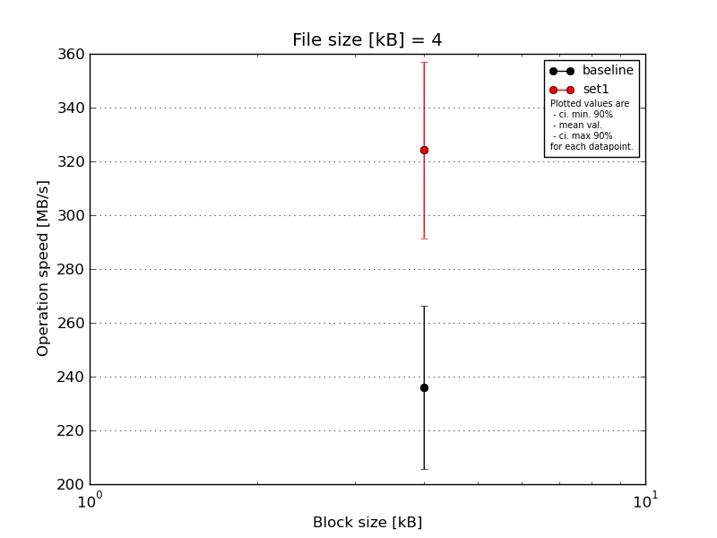
|
File size [kB] |
Block size [kB] |
| 4 |
| baseline | 4 | 260.87 |
| 4 | 184.49 |
| 4 | 245.25 |
| 4 | 228.17 |
| 4 | 260.87 |
| mean val. |
235.93 |
| standard dev. |
31.77 |
| ci. min. 90% |
205.64 |
| ci. max 90% |
266.22 |
| geom. mean |
234.07 |
| median |
245.25 |
| first quartile |
228.17 |
| third quartile |
260.87 |
| minimum |
184.49 |
| maximum |
260.87 |
| set1 | 4 | 357.68 |
| 4 | 304.5 |
| 4 | 278.61 |
| 4 | 357.68 |
| 4 | 322.48 |
| mean val. |
324.19 |
| standard dev. |
34.32 |
| ci. min. 90% |
291.47 |
| ci. max 90% |
356.91 |
| geom. mean |
322.72 |
| median |
322.48 |
| first quartile |
304.5 |
| third quartile |
357.68 |
| minimum |
278.61 |
| maximum |
357.68 |
| baseline set1 difference |
37.41 % |
| ttest p-value |
0.0029 |
| ttest equality |
DIFF |
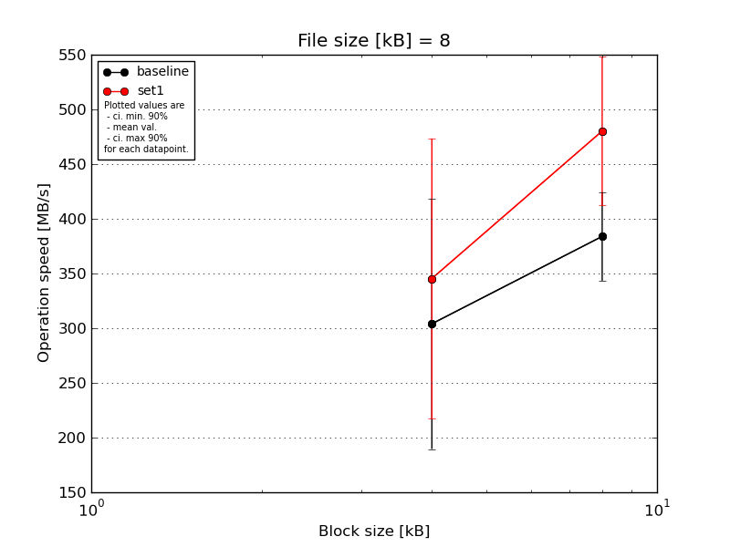
|
File size [kB] |
Block size [kB] |
| 4 |
8 |
| baseline | 8 | 301.16 | 432.26 |
| 8 | 356.93 | 342.03 |
| 8 | 391.0 | 415.81 |
| 8 | 97.87 | 391.0 |
| 8 | 373.19 | 338.49 |
| mean val. |
304.03 |
383.92 |
| standard dev. |
120.06 |
42.49 |
| ci. min. 90% |
189.57 |
343.4 |
| ci. max 90% |
418.49 |
424.43 |
| geom. mean |
273.67 |
382.02 |
| median |
356.93 |
391.0 |
| first quartile |
301.16 |
342.03 |
| third quartile |
373.19 |
415.81 |
| minimum |
97.87 |
338.49 |
| maximum |
391.0 |
432.26 |
| set1 | 8 | 483.26 | 557.22 |
| 8 | 368.98 | 557.22 |
| 8 | 338.49 | 410.6 |
| 8 | 125.64 | 438.04 |
| 8 | 410.6 | 438.04 |
| mean val. |
345.4 |
480.23 |
| standard dev. |
134.31 |
71.18 |
| ci. min. 90% |
217.35 |
412.37 |
| ci. max 90% |
473.44 |
548.09 |
| geom. mean |
315.25 |
476.1 |
| median |
368.98 |
438.04 |
| first quartile |
338.49 |
438.04 |
| third quartile |
410.6 |
557.22 |
| minimum |
125.64 |
410.6 |
| maximum |
483.26 |
557.22 |
| baseline set1 difference |
13.61 % |
25.09 % |
| ttest p-value |
0.6215 |
0.0317 |
| ttest equality |
SAME |
DIFF |
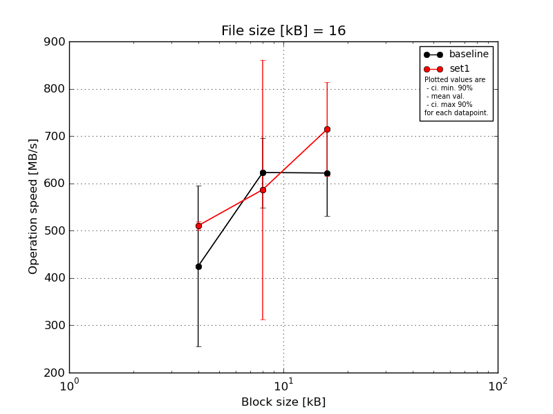
|
File size [kB] |
Block size [kB] |
| 4 |
8 |
16 |
| baseline | 16 | 625.31 | 676.98 | 706.16 |
| 16 | 458.92 | 650.12 | 556.31 |
| 16 | 446.41 | 650.12 | 676.98 |
| 16 | 134.62 | 486.15 | 486.15 |
| 16 | 458.92 | 650.12 | 684.05 |
| mean val. |
424.84 |
622.7 |
621.93 |
| standard dev. |
178.33 |
77.21 |
95.82 |
| ci. min. 90% |
254.82 |
549.08 |
530.58 |
| ci. max 90% |
594.85 |
696.32 |
713.29 |
| geom. mean |
379.91 |
618.4 |
615.65 |
| median |
458.92 |
650.12 |
676.98 |
| first quartile |
446.41 |
650.12 |
556.31 |
| third quartile |
458.92 |
650.12 |
684.05 |
| minimum |
134.62 |
486.15 |
486.15 |
| maximum |
625.31 |
676.98 |
706.16 |
| set1 | 16 | 520.93 | 713.86 | 864.53 |
| 16 | 504.88 | 782.0 | 650.12 |
| 16 | 504.88 | 556.31 | 782.0 |
| 16 | 501.02 | 782.0 | 625.31 |
| 16 | 520.93 | 98.88 | 650.12 |
| mean val. |
510.53 |
586.61 |
714.42 |
| standard dev. |
9.63 |
287.81 |
104.05 |
| ci. min. 90% |
501.35 |
312.21 |
615.21 |
| ci. max 90% |
519.7 |
861.01 |
813.62 |
| geom. mean |
510.45 |
474.34 |
708.62 |
| median |
504.88 |
713.86 |
650.12 |
| first quartile |
504.88 |
556.31 |
650.12 |
| third quartile |
520.93 |
782.0 |
782.0 |
| minimum |
501.02 |
98.88 |
625.31 |
| maximum |
520.93 |
782.0 |
864.53 |
| baseline set1 difference |
20.17 % |
-5.8 % |
14.87 % |
| ttest p-value |
0.3146 |
0.7934 |
0.1819 |
| ttest equality |
SAME |
SAME |
SAME |

|
File size [kB] |
Block size [kB] |
| 4 |
8 |
16 |
32 |
| baseline | 32 | 869.14 | 951.14 | 972.3 | 1009.75 |
| 32 | 558.21 | 652.73 | 709.24 | 762.91 |
| 32 | 820.2 | 440.13 | 944.28 | 666.0 |
| 32 | 504.5 | 892.83 | 694.22 | 724.93 |
| 32 | 825.36 | 758.49 | 944.28 | 892.83 |
| mean val. |
715.48 |
739.06 |
852.87 |
811.28 |
| standard dev. |
170.22 |
203.6 |
138.54 |
138.69 |
| ci. min. 90% |
553.2 |
544.95 |
720.78 |
679.05 |
| ci. max 90% |
877.77 |
933.17 |
984.95 |
943.51 |
| geom. mean |
698.01 |
713.6 |
843.45 |
802.13 |
| median |
820.2 |
758.49 |
944.28 |
762.91 |
| first quartile |
558.21 |
652.73 |
709.24 |
724.93 |
| third quartile |
825.36 |
892.83 |
944.28 |
892.83 |
| minimum |
504.5 |
440.13 |
694.22 |
666.0 |
| maximum |
869.14 |
951.14 |
972.3 |
1009.75 |
| set1 | 32 | 728.96 | 724.93 | 1076.07 | 1161.93 |
| 32 | 917.83 | 741.33 | 1041.86 | 892.83 |
| 32 | 613.04 | 1009.75 | 745.55 | 781.09 |
| 32 | 636.87 | 709.24 | 762.91 | 1161.93 |
| 32 | 624.73 | 724.93 | 781.09 | 846.69 |
| mean val. |
704.29 |
782.04 |
881.5 |
968.89 |
| standard dev. |
127.88 |
127.8 |
162.94 |
180.63 |
| ci. min. 90% |
582.37 |
660.19 |
726.15 |
796.68 |
| ci. max 90% |
826.21 |
903.88 |
1036.85 |
1141.11 |
| geom. mean |
695.89 |
774.68 |
869.88 |
955.67 |
| median |
636.87 |
724.93 |
781.09 |
892.83 |
| first quartile |
624.73 |
724.93 |
762.91 |
846.69 |
| third quartile |
728.96 |
741.33 |
1041.86 |
1161.93 |
| minimum |
613.04 |
709.24 |
745.55 |
781.09 |
| maximum |
917.83 |
1009.75 |
1076.07 |
1161.93 |
| baseline set1 difference |
-1.56 % |
5.82 % |
3.36 % |
19.43 % |
| ttest p-value |
0.9093 |
0.6998 |
0.7723 |
0.1603 |
| ttest equality |
SAME |
SAME |
SAME |
SAME |
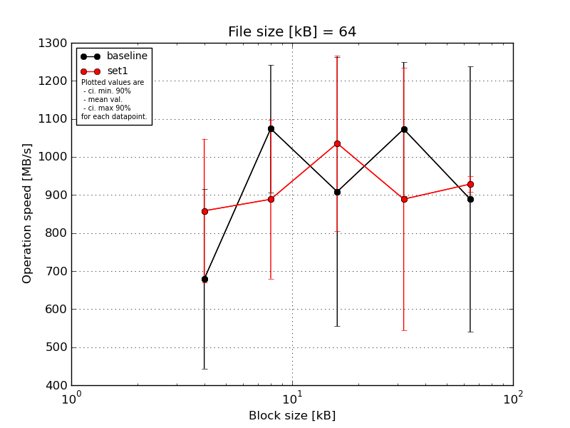
|
File size [kB] |
Block size [kB] |
| 4 |
8 |
16 |
32 |
64 |
| baseline | 64 | 1009.0 | 1181.86 | 1226.08 | 1298.99 | 1075.22 |
| 64 | 693.86 | 1155.81 | 303.48 | 892.24 | 295.94 |
| 64 | 315.53 | 1135.78 | 993.7 | 1226.08 | 1273.74 |
| 64 | 650.79 | 1135.78 | 843.43 | 907.68 | 920.43 |
| 64 | 726.55 | 762.48 | 1176.56 | 1041.06 | 880.25 |
| mean val. |
679.15 |
1074.34 |
908.65 |
1073.21 |
889.12 |
| standard dev. |
247.13 |
175.36 |
370.9 |
184.07 |
365.89 |
| ci. min. 90% |
443.54 |
907.15 |
555.04 |
897.72 |
540.28 |
| ci. max 90% |
914.76 |
1241.53 |
1262.26 |
1248.7 |
1237.95 |
| geom. mean |
636.48 |
1060.85 |
818.3 |
1060.73 |
800.34 |
| median |
693.86 |
1135.78 |
993.7 |
1041.06 |
920.43 |
| first quartile |
650.79 |
1135.78 |
843.43 |
907.68 |
880.25 |
| third quartile |
726.55 |
1155.81 |
1176.56 |
1226.08 |
1075.22 |
| minimum |
315.53 |
762.48 |
303.48 |
892.24 |
295.94 |
| maximum |
1009.0 |
1181.86 |
1226.08 |
1298.99 |
1273.74 |
| set1 | 64 | 630.45 | 790.05 | 857.22 | 892.24 | 933.54 |
| 64 | 1041.06 | 812.08 | 1273.74 | 947.03 | 964.45 |
| 64 | 1045.21 | 771.45 | 868.58 | 341.86 | 920.43 |
| 64 | 670.78 | 1279.96 | 854.43 | 1359.63 | 904.55 |
| 64 | 904.55 | 790.05 | 1325.26 | 904.55 | 920.43 |
| mean val. |
858.41 |
888.72 |
1035.85 |
889.06 |
928.68 |
| standard dev. |
198.47 |
219.18 |
241.43 |
362.1 |
22.48 |
| ci. min. 90% |
669.19 |
679.75 |
805.67 |
543.84 |
907.25 |
| ci. max 90% |
1047.62 |
1097.69 |
1266.02 |
1234.29 |
950.12 |
| geom. mean |
839.2 |
870.73 |
1014.36 |
813.04 |
928.47 |
| median |
904.55 |
790.05 |
868.58 |
904.55 |
920.43 |
| first quartile |
670.78 |
790.05 |
857.22 |
892.24 |
920.43 |
| third quartile |
1041.06 |
812.08 |
1273.74 |
947.03 |
933.54 |
| minimum |
630.45 |
771.45 |
854.43 |
341.86 |
904.55 |
| maximum |
1045.21 |
1279.96 |
1325.26 |
1359.63 |
964.45 |
| baseline set1 difference |
26.4 % |
-17.28 % |
14.0 % |
-17.16 % |
4.45 % |
| ttest p-value |
0.2416 |
0.1775 |
0.5384 |
0.3404 |
0.8154 |
| ttest equality |
SAME |
SAME |
SAME |
SAME |
SAME |
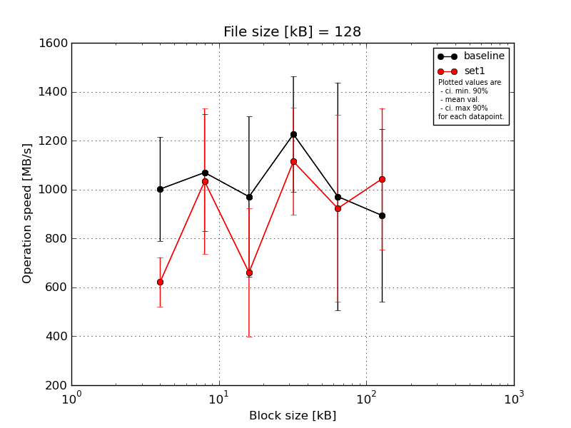
|
File size [kB] |
Block size [kB] |
| 4 |
8 |
16 |
32 |
64 |
128 |
| baseline | 128 | 1178.69 | 1373.18 | 1437.17 | 1503.09 | 1520.53 | 1358.94 |
| 128 | 1147.73 | 905.81 | 969.46 | 1469.39 | 1034.49 | 491.92 |
| 128 | 1168.18 | 1314.64 | 1024.39 | 1168.18 | 1358.94 | 534.55 |
| 128 | 762.26 | 868.31 | 953.59 | 1006.69 | 473.27 | 1040.65 |
| 128 | 753.5 | 885.91 | 469.87 | 984.01 | 469.87 | 1042.72 |
| mean val. |
1002.07 |
1069.57 |
970.9 |
1226.27 |
971.42 |
893.76 |
| standard dev. |
223.22 |
251.64 |
343.37 |
248.0 |
488.72 |
371.04 |
| ci. min. 90% |
789.26 |
829.66 |
643.53 |
989.83 |
505.48 |
540.01 |
| ci. max 90% |
1214.88 |
1309.48 |
1298.26 |
1462.72 |
1437.36 |
1247.5 |
| geom. mean |
980.81 |
1046.95 |
914.47 |
1206.44 |
861.79 |
827.39 |
| median |
1147.73 |
905.81 |
969.46 |
1168.18 |
1034.49 |
1040.65 |
| first quartile |
762.26 |
885.91 |
953.59 |
1006.69 |
473.27 |
534.55 |
| third quartile |
1168.18 |
1314.64 |
1024.39 |
1469.39 |
1358.94 |
1042.72 |
| minimum |
753.5 |
868.31 |
469.87 |
984.01 |
469.87 |
491.92 |
| maximum |
1178.69 |
1373.18 |
1437.17 |
1503.09 |
1520.53 |
1358.94 |
| set1 | 128 | 722.35 | 868.31 | 446.66 | 1524.95 | 766.72 | 1542.9 |
| 128 | 576.26 | 1358.94 | 457.97 | 1016.44 | 491.92 | 800.68 |
| 128 | 714.48 | 698.3 | 477.14 | 1008.62 | 999.01 | 801.9 |
| 128 | 631.06 | 1373.18 | 953.59 | 1006.69 | 795.82 | 1032.46 |
| 128 | 468.2 | 868.31 | 969.46 | 1016.44 | 1561.28 | 1042.72 |
| mean val. |
622.47 |
1033.41 |
660.96 |
1114.63 |
922.95 |
1044.13 |
| standard dev. |
105.42 |
311.54 |
274.65 |
229.42 |
399.88 |
302.84 |
| ci. min. 90% |
521.97 |
736.39 |
399.12 |
895.9 |
541.71 |
755.4 |
| ci. max 90% |
722.97 |
1330.43 |
922.81 |
1333.36 |
1304.19 |
1332.86 |
| geom. mean |
614.85 |
996.47 |
618.12 |
1098.52 |
859.17 |
1012.96 |
| median |
631.06 |
868.31 |
477.14 |
1016.44 |
795.82 |
1032.46 |
| first quartile |
576.26 |
868.31 |
457.97 |
1008.62 |
766.72 |
801.9 |
| third quartile |
714.48 |
1358.94 |
953.59 |
1016.44 |
999.01 |
1042.72 |
| minimum |
468.2 |
698.3 |
446.66 |
1006.69 |
491.92 |
800.68 |
| maximum |
722.35 |
1373.18 |
969.46 |
1524.95 |
1561.28 |
1542.9 |
| baseline set1 difference |
-37.88 % |
-3.38 % |
-31.92 % |
-9.1 % |
-4.99 % |
16.83 % |
| ttest p-value |
0.0088 |
0.845 |
0.1536 |
0.4811 |
0.868 |
0.5025 |
| ttest equality |
DIFF |
SAME |
SAME |
SAME |
SAME |
SAME |
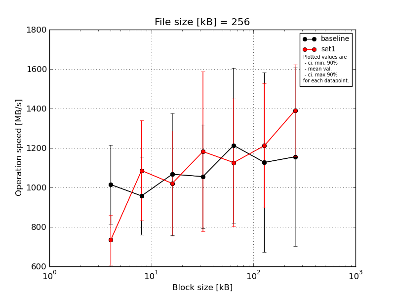
|
File size [kB] |
Block size [kB] |
| 4 |
8 |
16 |
32 |
64 |
128 |
256 |
| baseline | 256 | 1146.23 | 1294.85 | 1365.68 | 1444.71 | 1644.04 | 1633.79 | 1644.04 |
| 256 | 806.1 | 926.46 | 1029.22 | 665.0 | 662.9 | 686.78 | 657.91 |
| 256 | 1106.32 | 729.29 | 1344.66 | 1055.11 | 1603.8 | 1611.2 | 1613.68 |
| 256 | 1238.27 | 905.66 | 1028.21 | 1028.21 | 1073.47 | 1046.69 | 1157.62 |
| 256 | 776.26 | 929.75 | 567.16 | 1082.34 | 1082.34 | 656.26 | 704.31 |
| mean val. |
1014.63 |
957.2 |
1066.99 |
1055.07 |
1213.31 |
1126.94 |
1155.51 |
| standard dev. |
209.79 |
206.34 |
323.68 |
276.33 |
411.6 |
477.79 |
474.28 |
| ci. min. 90% |
814.62 |
760.48 |
758.39 |
791.62 |
820.89 |
671.42 |
703.33 |
| ci. max 90% |
1214.65 |
1153.92 |
1375.58 |
1318.52 |
1605.73 |
1582.46 |
1607.68 |
| geom. mean |
996.49 |
940.71 |
1019.65 |
1024.4 |
1152.21 |
1044.26 |
1073.11 |
| median |
1106.32 |
926.46 |
1029.22 |
1055.11 |
1082.34 |
1046.69 |
1157.62 |
| first quartile |
806.1 |
905.66 |
1028.21 |
1028.21 |
1073.47 |
686.78 |
704.31 |
| third quartile |
1146.23 |
929.75 |
1344.66 |
1082.34 |
1603.8 |
1611.2 |
1613.68 |
| minimum |
776.26 |
729.29 |
567.16 |
665.0 |
662.9 |
656.26 |
657.91 |
| maximum |
1238.27 |
1294.85 |
1365.68 |
1444.71 |
1644.04 |
1633.79 |
1644.04 |
| set1 | 256 | 896.37 | 1446.7 | 1082.34 | 1644.04 | 1471.05 | 1444.71 | 1664.92 |
| 256 | 550.78 | 879.82 | 1427.01 | 1601.35 | 999.78 | 1633.79 | 1195.9 |
| 256 | 806.72 | 1294.85 | 984.76 | 1020.21 | 1452.71 | 1111.01 | 1644.04 |
| 256 | 661.64 | 908.8 | 647.75 | 668.39 | 1045.64 | 793.89 | 1275.94 |
| 256 | 755.02 | 899.44 | 961.29 | 976.5 | 661.64 | 1076.78 | 1173.16 |
| mean val. |
734.1 |
1085.92 |
1020.63 |
1182.1 |
1126.17 |
1212.04 |
1390.79 |
| standard dev. |
133.13 |
265.72 |
279.64 |
424.72 |
340.52 |
329.91 |
243.83 |
| ci. min. 90% |
607.18 |
832.58 |
754.02 |
777.18 |
801.52 |
897.5 |
1158.33 |
| ci. max 90% |
861.03 |
1339.26 |
1287.24 |
1587.02 |
1450.82 |
1526.57 |
1623.26 |
| geom. mean |
724.02 |
1061.42 |
989.18 |
1118.82 |
1081.29 |
1175.21 |
1374.16 |
| median |
755.02 |
908.8 |
984.76 |
1020.21 |
1045.64 |
1111.01 |
1275.94 |
| first quartile |
661.64 |
899.44 |
961.29 |
976.5 |
999.78 |
1076.78 |
1195.9 |
| third quartile |
806.72 |
1294.85 |
1082.34 |
1601.35 |
1452.71 |
1444.71 |
1644.04 |
| minimum |
550.78 |
879.82 |
647.75 |
668.39 |
661.64 |
793.89 |
1173.16 |
| maximum |
896.37 |
1446.7 |
1427.01 |
1644.04 |
1471.05 |
1633.79 |
1664.92 |
| baseline set1 difference |
-27.65 % |
13.45 % |
-4.34 % |
12.04 % |
-7.18 % |
7.55 % |
20.36 % |
| ttest p-value |
0.0356 |
0.4171 |
0.8146 |
0.5904 |
0.7247 |
0.7515 |
0.3528 |
| ttest equality |
DIFF |
SAME |
SAME |
SAME |
SAME |
SAME |
SAME |
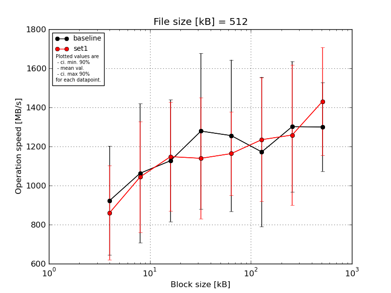
|
File size [kB] |
Block size [kB] |
| 4 |
8 |
16 |
32 |
64 |
128 |
256 |
512 |
| baseline | 512 | 1295.49 | 1497.1 | 1118.6 | 1660.71 | 1701.12 | 1690.15 | 1690.15 | 1082.23 |
| 512 | 695.39 | 746.1 | 796.24 | 818.3 | 864.87 | 848.77 | 1018.13 | 1416.22 |
| 512 | 1182.29 | 1403.9 | 1436.6 | 1515.5 | 1639.93 | 1524.31 | 1628.47 | 1660.71 |
| 512 | 756.33 | 990.25 | 809.15 | 1567.61 | 1219.41 | 917.47 | 912.28 | 1201.94 |
| 512 | 687.86 | 678.29 | 1474.99 | 831.94 | 853.26 | 880.49 | 1258.94 | 1138.64 |
| mean val. |
923.47 |
1063.13 |
1127.11 |
1278.81 |
1255.72 |
1172.24 |
1301.59 |
1299.95 |
| standard dev. |
291.92 |
373.62 |
326.9 |
417.44 |
406.83 |
402.13 |
350.56 |
238.06 |
| ci. min. 90% |
645.16 |
706.92 |
815.45 |
880.82 |
867.85 |
788.85 |
967.38 |
1072.98 |
| ci. max 90% |
1201.78 |
1419.34 |
1438.78 |
1676.8 |
1643.59 |
1555.63 |
1635.81 |
1526.91 |
| geom. mean |
888.63 |
1010.44 |
1088.36 |
1218.48 |
1202.12 |
1120.52 |
1263.36 |
1283.52 |
| median |
756.33 |
990.25 |
1118.6 |
1515.5 |
1219.41 |
917.47 |
1258.94 |
1201.94 |
| first quartile |
695.39 |
746.1 |
809.15 |
831.94 |
864.87 |
880.49 |
1018.13 |
1138.64 |
| third quartile |
1182.29 |
1403.9 |
1436.6 |
1567.61 |
1639.93 |
1524.31 |
1628.47 |
1416.22 |
| minimum |
687.86 |
678.29 |
796.24 |
818.3 |
853.26 |
848.77 |
912.28 |
1082.23 |
| maximum |
1295.49 |
1497.1 |
1474.99 |
1660.71 |
1701.12 |
1690.15 |
1690.15 |
1660.71 |
| set1 | 512 | 834.58 | 1470.85 | 1018.13 | 1075.02 | 1412.41 | 1361.96 | 1098.67 | 1553.67 |
| 512 | 1116.21 | 829.3 | 1514.4 | 914.27 | 910.69 | 1319.12 | 862.03 | 1091.81 |
| 512 | 606.85 | 1106.21 | 1408.61 | 826.36 | 1265.78 | 969.2 | 1009.8 | 1149.25 |
| 512 | 624.93 | 702.37 | 899.37 | 1231.59 | 1288.33 | 847.4 | 1645.08 | 1672.63 |
| 512 | 1123.39 | 1110.89 | 900.53 | 1650.25 | 941.78 | 1677.98 | 1677.98 | 1688.79 |
| mean val. |
861.19 |
1043.93 |
1148.21 |
1139.5 |
1163.8 |
1235.13 |
1258.71 |
1431.23 |
| standard dev. |
252.49 |
297.22 |
292.44 |
324.92 |
224.21 |
331.78 |
377.49 |
289.1 |
| ci. min. 90% |
620.47 |
760.56 |
869.39 |
829.72 |
950.04 |
918.82 |
898.82 |
1155.6 |
| ci. max 90% |
1101.91 |
1327.29 |
1427.02 |
1449.27 |
1377.55 |
1551.45 |
1618.61 |
1706.86 |
| geom. mean |
831.25 |
1010.35 |
1119.58 |
1105.44 |
1145.86 |
1198.8 |
1214.28 |
1406.63 |
| median |
834.58 |
1106.21 |
1018.13 |
1075.02 |
1265.78 |
1319.12 |
1098.67 |
1553.67 |
| first quartile |
624.93 |
829.3 |
900.53 |
914.27 |
941.78 |
969.2 |
1009.8 |
1149.25 |
| third quartile |
1116.21 |
1110.89 |
1408.61 |
1231.59 |
1288.33 |
1361.96 |
1645.08 |
1672.63 |
| minimum |
606.85 |
702.37 |
899.37 |
826.36 |
910.69 |
847.4 |
862.03 |
1091.81 |
| maximum |
1123.39 |
1470.85 |
1514.4 |
1650.25 |
1412.41 |
1677.98 |
1677.98 |
1688.79 |
| baseline set1 difference |
-6.74 % |
-1.81 % |
1.87 % |
-10.89 % |
-7.32 % |
5.37 % |
-3.29 % |
10.1 % |
| ttest p-value |
0.7276 |
0.9305 |
0.917 |
0.5722 |
0.6699 |
0.7942 |
0.857 |
0.4557 |
| ttest equality |
SAME |
SAME |
SAME |
SAME |
SAME |
SAME |
SAME |
SAME |
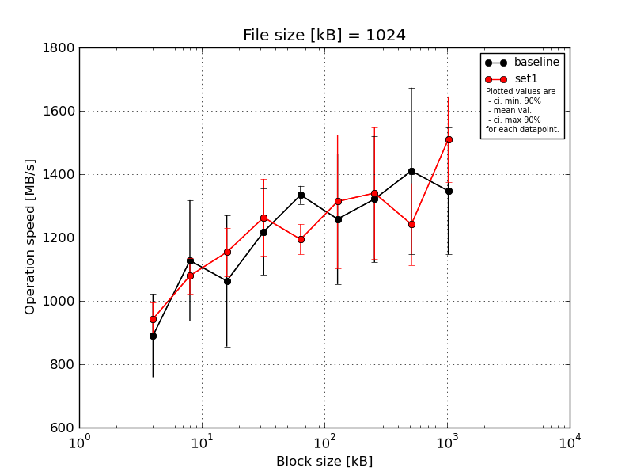
|
File size [kB] |
Block size [kB] |
| 4 |
8 |
16 |
32 |
64 |
128 |
256 |
512 |
1024 |
| baseline | 1024 | 1079.95 | 1248.38 | 1301.85 | 1351.34 | 1381.16 | 1398.19 | 1386.64 | 1714.9 | 1392.62 |
| 1024 | 851.15 | 1015.37 | 749.01 | 1371.67 | 1347.43 | 1083.29 | 1396.33 | 1141.68 | 1148.24 |
| 1024 | 968.93 | 1420.45 | 1228.63 | 1200.5 | 1308.75 | 1569.84 | 1597.95 | 1660.58 | 1650.13 |
| 1024 | 832.07 | 955.03 | 1046.01 | 1129.99 | 1319.46 | 1104.98 | 1091.75 | 1133.65 | 1144.17 |
| 1024 | 719.46 | 997.03 | 989.27 | 1038.5 | 1314.08 | 1135.19 | 1133.65 | 1400.53 | 1400.53 |
| mean val. |
890.31 |
1127.25 |
1062.95 |
1218.4 |
1334.18 |
1258.3 |
1321.26 |
1410.27 |
1347.14 |
| standard dev. |
138.07 |
199.86 |
217.25 |
142.89 |
30.21 |
215.59 |
208.77 |
275.77 |
210.64 |
| ci. min. 90% |
758.67 |
936.71 |
855.83 |
1082.17 |
1305.38 |
1052.76 |
1122.23 |
1147.35 |
1146.31 |
| ci. max 90% |
1021.95 |
1317.79 |
1270.08 |
1354.63 |
1362.98 |
1463.84 |
1520.3 |
1673.19 |
1547.96 |
| geom. mean |
881.81 |
1113.84 |
1043.91 |
1211.63 |
1333.91 |
1244.28 |
1308.05 |
1388.55 |
1334.24 |
| median |
851.15 |
1015.37 |
1046.01 |
1200.5 |
1319.46 |
1135.19 |
1386.64 |
1400.53 |
1392.62 |
| first quartile |
832.07 |
997.03 |
989.27 |
1129.99 |
1314.08 |
1104.98 |
1133.65 |
1141.68 |
1148.24 |
| third quartile |
968.93 |
1248.38 |
1228.63 |
1351.34 |
1347.43 |
1398.19 |
1396.33 |
1660.58 |
1400.53 |
| minimum |
719.46 |
955.03 |
749.01 |
1038.5 |
1308.75 |
1083.29 |
1091.75 |
1133.65 |
1144.17 |
| maximum |
1079.95 |
1420.45 |
1301.85 |
1371.67 |
1381.16 |
1569.84 |
1597.95 |
1714.9 |
1650.13 |
| set1 | 1024 | 904.96 | 1161.6 | 1089.48 | 1120.93 | 1180.56 | 1697.54 | 1721.23 | 1377.08 | 1375.72 |
| 1024 | 986.24 | 1053.9 | 1228.63 | 1144.17 | 1172.31 | 1182.22 | 1206.02 | 1321.12 | 1340.12 |
| 1024 | 895.87 | 1021.31 | 1097.75 | 1351.34 | 1171.0 | 1190.28 | 1317.39 | 1096.32 | 1589.47 |
| 1024 | 909.87 | 1040.56 | 1254.73 | 1412.32 | 1283.52 | 1191.63 | 1219.7 | 1319.46 | 1652.73 |
| 1024 | 1017.09 | 1118.84 | 1098.9 | 1288.65 | 1164.18 | 1307.12 | 1237.33 | 1094.32 | 1592.49 |
| mean val. |
942.81 |
1079.24 |
1153.9 |
1263.48 |
1194.31 |
1313.76 |
1340.33 |
1241.66 |
1510.1 |
| standard dev. |
55.06 |
58.83 |
80.74 |
127.54 |
50.21 |
220.68 |
217.26 |
135.59 |
141.76 |
| ci. min. 90% |
890.31 |
1023.15 |
1076.92 |
1141.89 |
1146.45 |
1103.36 |
1133.2 |
1112.39 |
1374.95 |
| ci. max 90% |
995.3 |
1135.33 |
1230.88 |
1385.07 |
1242.18 |
1524.15 |
1547.47 |
1370.93 |
1645.26 |
| geom. mean |
941.54 |
1077.98 |
1151.68 |
1258.29 |
1193.5 |
1300.54 |
1327.79 |
1235.59 |
1504.67 |
| median |
909.87 |
1053.9 |
1098.9 |
1288.65 |
1172.31 |
1191.63 |
1237.33 |
1319.46 |
1589.47 |
| first quartile |
904.96 |
1040.56 |
1097.75 |
1144.17 |
1171.0 |
1190.28 |
1219.7 |
1096.32 |
1375.72 |
| third quartile |
986.24 |
1118.84 |
1228.63 |
1351.34 |
1180.56 |
1307.12 |
1317.39 |
1321.12 |
1592.49 |
| minimum |
895.87 |
1021.31 |
1089.48 |
1120.93 |
1164.18 |
1182.22 |
1206.02 |
1094.32 |
1340.12 |
| maximum |
1017.09 |
1161.6 |
1254.73 |
1412.32 |
1283.52 |
1697.54 |
1721.23 |
1377.08 |
1652.73 |
| baseline set1 difference |
5.9 % |
-4.26 % |
8.56 % |
3.7 % |
-10.48 % |
4.41 % |
1.44 % |
-11.96 % |
12.1 % |
| ttest p-value |
0.4525 |
0.6203 |
0.4058 |
0.6129 |
0.0007 |
0.6982 |
0.891 |
0.2548 |
0.1891 |
| ttest equality |
SAME |
SAME |
SAME |
SAME |
DIFF |
SAME |
SAME |
SAME |
SAME |
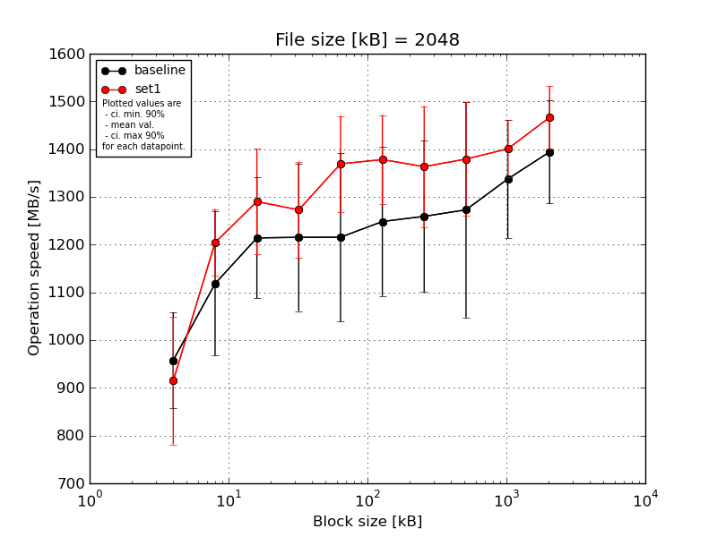
|
File size [kB] |
Block size [kB] |
| 4 |
8 |
16 |
32 |
64 |
128 |
256 |
512 |
1024 |
2048 |
| baseline | 2048 | 1097.73 | 1358.74 | 1320.25 | 1356.76 | 1384.07 | 1397.45 | 1522.21 | 1530.26 | 1513.97 | 1519.73 |
| 2048 | 890.91 | 1109.93 | 1195.5 | 1058.12 | 1099.02 | 1100.75 | 1208.42 | 1241.32 | 1212.26 | 1209.99 |
| 2048 | 1042.87 | 1166.9 | 1372.52 | 1412.51 | 1448.11 | 1441.88 | 1311.58 | 1474.06 | 1329.67 | 1423.53 |
| 2048 | 898.06 | 992.52 | 1131.79 | 1075.9 | 1096.58 | 1208.42 | 1144.76 | 1171.63 | 1217.36 | 1392.81 |
| 2048 | 859.5 | 963.45 | 1050.44 | 1172.94 | 1049.91 | 1093.58 | 1109.34 | 947.46 | 1414.41 | 1425.47 |
| mean val. |
957.81 |
1118.31 |
1214.1 |
1215.25 |
1215.54 |
1248.42 |
1259.26 |
1272.95 |
1337.53 |
1394.3 |
| standard dev. |
105.5 |
158.15 |
132.54 |
161.89 |
185.51 |
163.57 |
165.87 |
236.57 |
129.65 |
113.5 |
| ci. min. 90% |
857.23 |
967.53 |
1087.73 |
1060.9 |
1038.68 |
1092.47 |
1101.12 |
1047.4 |
1213.93 |
1286.09 |
| ci. max 90% |
1058.39 |
1269.08 |
1340.47 |
1369.59 |
1392.4 |
1404.36 |
1417.4 |
1498.49 |
1461.14 |
1502.52 |
| geom. mean |
953.28 |
1109.7 |
1208.29 |
1206.75 |
1204.57 |
1239.95 |
1250.99 |
1254.59 |
1332.57 |
1390.44 |
| median |
898.06 |
1109.93 |
1195.5 |
1172.94 |
1099.02 |
1208.42 |
1208.42 |
1241.32 |
1329.67 |
1423.53 |
| first quartile |
890.91 |
992.52 |
1131.79 |
1075.9 |
1096.58 |
1100.75 |
1144.76 |
1171.63 |
1217.36 |
1392.81 |
| third quartile |
1042.87 |
1166.9 |
1320.25 |
1356.76 |
1384.07 |
1397.45 |
1311.58 |
1474.06 |
1414.41 |
1425.47 |
| minimum |
859.5 |
963.45 |
1050.44 |
1058.12 |
1049.91 |
1093.58 |
1109.34 |
947.46 |
1212.26 |
1209.99 |
| maximum |
1097.73 |
1358.74 |
1372.52 |
1412.51 |
1448.11 |
1441.88 |
1522.21 |
1530.26 |
1513.97 |
1519.73 |
| set1 | 2048 | 1064.98 | 1314.87 | 1441.88 | 1450.36 | 1535.02 | 1519.73 | 1536.15 | 1505.0 | 1404.7 | 1544.63 |
| 2048 | 957.41 | 1205.64 | 1201.84 | 1220.91 | 1380.2 | 1247.6 | 1174.25 | 1488.18 | 1342.22 | 1358.74 |
| 2048 | 687.54 | 1212.08 | 1165.6 | 1198.23 | 1342.22 | 1384.99 | 1375.68 | 1202.01 | 1486.08 | 1491.36 |
| 2048 | 902.99 | 1111.69 | 1373.65 | 1210.69 | 1245.38 | 1391.88 | 1315.69 | 1375.68 | 1434.73 | 1453.38 |
| 2048 | 962.02 | 1177.21 | 1268.16 | 1283.88 | 1343.08 | 1346.74 | 1415.37 | 1325.46 | 1336.02 | 1484.76 |
| mean val. |
914.99 |
1204.3 |
1290.23 |
1272.81 |
1369.18 |
1378.19 |
1363.43 |
1379.27 |
1400.75 |
1466.57 |
| standard dev. |
139.98 |
73.48 |
115.96 |
104.6 |
105.31 |
97.86 |
132.99 |
124.5 |
63.38 |
68.63 |
| ci. min. 90% |
781.53 |
1134.24 |
1179.67 |
1173.09 |
1268.78 |
1284.88 |
1236.63 |
1260.57 |
1340.33 |
1401.14 |
| ci. max 90% |
1048.45 |
1274.36 |
1400.78 |
1372.53 |
1469.58 |
1471.49 |
1490.22 |
1497.96 |
1461.17 |
1532.01 |
| geom. mean |
905.57 |
1202.53 |
1286.1 |
1269.55 |
1366.02 |
1375.42 |
1358.15 |
1374.67 |
1399.61 |
1465.26 |
| median |
957.41 |
1205.64 |
1268.16 |
1220.91 |
1343.08 |
1384.99 |
1375.68 |
1375.68 |
1404.7 |
1484.76 |
| first quartile |
902.99 |
1177.21 |
1201.84 |
1210.69 |
1342.22 |
1346.74 |
1315.69 |
1325.46 |
1342.22 |
1453.38 |
| third quartile |
962.02 |
1212.08 |
1373.65 |
1283.88 |
1380.2 |
1391.88 |
1415.37 |
1488.18 |
1434.73 |
1491.36 |
| minimum |
687.54 |
1111.69 |
1165.6 |
1198.23 |
1245.38 |
1247.6 |
1174.25 |
1202.01 |
1336.02 |
1358.74 |
| maximum |
1064.98 |
1314.87 |
1441.88 |
1450.36 |
1535.02 |
1519.73 |
1536.15 |
1505.0 |
1486.08 |
1544.63 |
| baseline set1 difference |
-4.47 % |
7.69 % |
6.27 % |
4.74 % |
12.64 % |
10.4 % |
8.27 % |
8.35 % |
4.73 % |
5.18 % |
| ttest p-value |
0.5998 |
0.3022 |
0.3621 |
0.523 |
0.1459 |
0.1664 |
0.3052 |
0.3998 |
0.356 |
0.2578 |
| ttest equality |
SAME |
SAME |
SAME |
SAME |
SAME |
SAME |
SAME |
SAME |
SAME |
SAME |
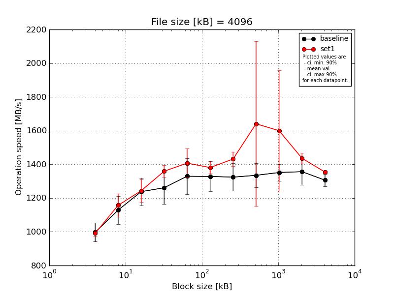
|
File size [kB] |
Block size [kB] |
| 4 |
8 |
16 |
32 |
64 |
128 |
256 |
512 |
1024 |
2048 |
4096 |
| baseline | 4096 | 1085.21 | 1264.22 | 1339.09 | 1408.45 | 1511.08 | 1431.53 | 1428.6 | 1445.59 | 1420.86 | 1488.69 | 1356.85 |
| 4096 | 975.15 | 1063.28 | 1239.93 | 1156.75 | 1328.49 | 1395.22 | 1351.28 | 1286.12 | 1317.53 | 1267.47 | 1324.92 |
| 4096 | 1027.52 | 1165.83 | 1287.5 | 1312.79 | 1338.24 | 1355.43 | 1366.13 | 1380.75 | 1391.28 | 1355.54 | 1293.66 |
| 4096 | 951.21 | 1054.06 | 1109.54 | 1178.19 | 1236.09 | 1231.55 | 1263.46 | 1271.4 | 1321.48 | 1323.14 | 1304.62 |
| 4096 | 948.52 | 1098.57 | 1214.0 | 1250.37 | 1233.0 | 1228.58 | 1211.72 | 1291.17 | 1307.27 | 1348.56 | 1250.74 |
| mean val. |
997.52 |
1129.19 |
1238.01 |
1261.31 |
1329.38 |
1328.46 |
1324.24 |
1335.01 |
1351.68 |
1356.68 |
1306.16 |
| standard dev. |
58.39 |
87.32 |
86.24 |
102.79 |
113.01 |
93.77 |
86.22 |
75.29 |
51.0 |
81.51 |
39.22 |
| ci. min. 90% |
941.85 |
1045.94 |
1155.79 |
1163.31 |
1221.64 |
1239.06 |
1242.04 |
1263.22 |
1303.06 |
1278.97 |
1268.77 |
| ci. max 90% |
1053.19 |
1212.45 |
1320.23 |
1359.31 |
1437.12 |
1417.86 |
1406.44 |
1406.79 |
1400.31 |
1434.39 |
1343.55 |
| geom. mean |
996.18 |
1126.57 |
1235.56 |
1258.02 |
1325.68 |
1325.79 |
1321.97 |
1333.34 |
1350.92 |
1354.77 |
1305.69 |
| median |
975.15 |
1098.57 |
1239.93 |
1250.37 |
1328.49 |
1355.43 |
1351.28 |
1291.17 |
1321.48 |
1348.56 |
1304.62 |
| first quartile |
951.21 |
1063.28 |
1214.0 |
1178.19 |
1236.09 |
1231.55 |
1263.46 |
1286.12 |
1317.53 |
1323.14 |
1293.66 |
| third quartile |
1027.52 |
1165.83 |
1287.5 |
1312.79 |
1338.24 |
1395.22 |
1366.13 |
1380.75 |
1391.28 |
1355.54 |
1324.92 |
| minimum |
948.52 |
1054.06 |
1109.54 |
1156.75 |
1233.0 |
1228.58 |
1211.72 |
1271.4 |
1307.27 |
1267.47 |
1250.74 |
| maximum |
1085.21 |
1264.22 |
1339.09 |
1408.45 |
1511.08 |
1431.53 |
1428.6 |
1445.59 |
1420.86 |
1488.69 |
1356.85 |
| set1 | 4096 | 1017.31 | 1238.01 | 1302.9 | 1419.9 | 1529.54 | 1443.47 | 1510.53 | 1449.71 | 1449.33 | 1429.57 | 1360.15 |
| 4096 | 987.89 | 1091.14 | 1219.82 | 1336.53 | 1373.18 | 1377.46 | 1421.94 | 1410.46 | 1477.02 | 1403.5 | 1349.0 |
| 4096 | 987.66 | 1235.0 | 1219.11 | 1349.97 | 1467.33 | 1367.02 | 1396.15 | 2555.63 | 2267.56 | 1465.28 | 1345.43 |
| 4096 | 969.74 | 1107.42 | 1324.08 | 1327.96 | 1361.92 | 1344.56 | 1417.38 | 1444.09 | 1406.09 | 1405.38 | 1349.54 |
| 4096 | 994.81 | 1115.15 | 1151.74 | 1361.48 | 1303.71 | 1372.17 | 1411.53 | 1343.7 | 1399.06 | 1475.98 | 1367.47 |
| mean val. |
991.48 |
1157.34 |
1243.53 |
1359.17 |
1407.14 |
1380.94 |
1431.51 |
1640.72 |
1599.81 |
1435.95 |
1354.32 |
| standard dev. |
17.16 |
72.79 |
69.99 |
36.28 |
90.14 |
37.14 |
45.24 |
513.19 |
374.64 |
33.51 |
9.18 |
| ci. min. 90% |
975.12 |
1087.95 |
1176.8 |
1324.58 |
1321.2 |
1345.53 |
1388.38 |
1151.45 |
1242.63 |
1404.0 |
1345.56 |
| ci. max 90% |
1007.84 |
1226.74 |
1310.27 |
1393.75 |
1493.07 |
1416.34 |
1474.64 |
2129.99 |
1956.99 |
1467.89 |
1363.07 |
| geom. mean |
991.36 |
1155.54 |
1241.95 |
1358.79 |
1404.85 |
1380.54 |
1430.95 |
1589.31 |
1570.34 |
1435.63 |
1354.29 |
| median |
987.89 |
1115.15 |
1219.82 |
1349.97 |
1373.18 |
1372.17 |
1417.38 |
1444.09 |
1449.33 |
1429.57 |
1349.54 |
| first quartile |
987.66 |
1107.42 |
1219.11 |
1336.53 |
1361.92 |
1367.02 |
1411.53 |
1410.46 |
1406.09 |
1405.38 |
1349.0 |
| third quartile |
994.81 |
1235.0 |
1302.9 |
1361.48 |
1467.33 |
1377.46 |
1421.94 |
1449.71 |
1477.02 |
1465.28 |
1360.15 |
| minimum |
969.74 |
1091.14 |
1151.74 |
1327.96 |
1303.71 |
1344.56 |
1396.15 |
1343.7 |
1399.06 |
1403.5 |
1345.43 |
| maximum |
1017.31 |
1238.01 |
1324.08 |
1419.9 |
1529.54 |
1443.47 |
1510.53 |
2555.63 |
2267.56 |
1475.98 |
1367.47 |
| baseline set1 difference |
-0.61 % |
2.49 % |
0.45 % |
7.76 % |
5.85 % |
3.95 % |
8.1 % |
22.9 % |
18.36 % |
5.84 % |
3.69 % |
| ttest p-value |
0.8299 |
0.5949 |
0.9142 |
0.0796 |
0.2634 |
0.2782 |
0.0391 |
0.224 |
0.1804 |
0.0791 |
0.0282 |
| ttest equality |
SAME |
SAME |
SAME |
DIFF |
SAME |
SAME |
DIFF |
SAME |
SAME |
DIFF |
DIFF |
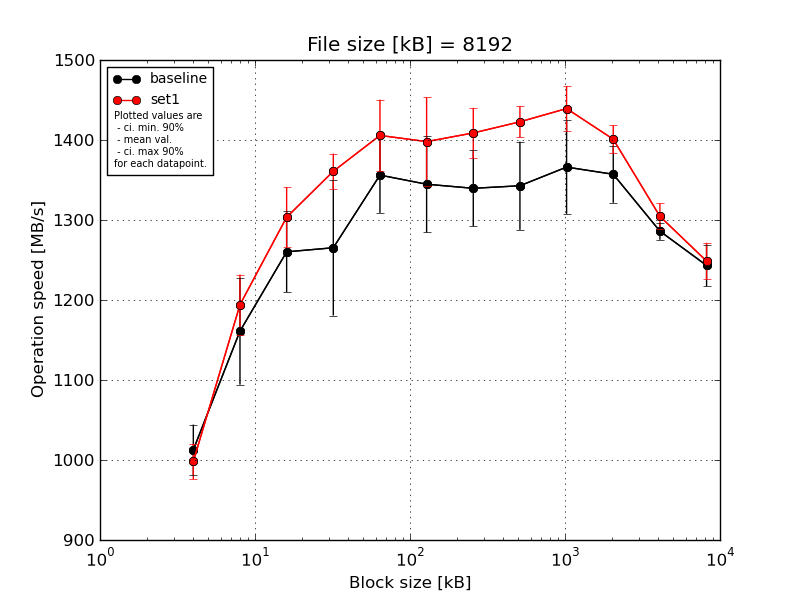
|
File size [kB] |
Block size [kB] |
| 4 |
8 |
16 |
32 |
64 |
128 |
256 |
512 |
1024 |
2048 |
4096 |
8192 |
| baseline | 8192 | 1069.67 | 1237.81 | 1347.9 | 1379.77 | 1433.23 | 1423.98 | 1405.26 | 1422.96 | 1459.6 | 1418.2 | 1304.82 | 1283.31 |
| 8192 | 992.06 | 1087.71 | 1270.63 | 1209.92 | 1308.28 | 1299.16 | 1301.88 | 1278.81 | 1302.94 | 1329.11 | 1279.39 | 1221.19 |
| 8192 | 1013.31 | 1225.7 | 1239.32 | 1333.76 | 1375.76 | 1403.02 | 1380.0 | 1377.9 | 1390.81 | 1367.96 | 1288.68 | 1252.93 |
| 8192 | 998.23 | 1096.02 | 1223.64 | 1237.63 | 1334.24 | 1295.35 | 1314.53 | 1304.41 | 1348.61 | 1334.66 | 1278.96 | 1243.23 |
| 8192 | 990.48 | 1158.25 | 1219.5 | 1165.5 | 1329.11 | 1302.08 | 1296.4 | 1330.0 | 1328.69 | 1335.78 | 1278.37 | 1215.26 |
| mean val. |
1012.75 |
1161.1 |
1260.2 |
1265.32 |
1356.12 |
1344.72 |
1339.61 |
1342.82 |
1366.13 |
1357.14 |
1286.04 |
1243.18 |
| standard dev. |
33.07 |
70.16 |
52.98 |
88.86 |
49.57 |
63.27 |
49.65 |
57.86 |
61.33 |
37.39 |
11.32 |
27.24 |
| ci. min. 90% |
981.22 |
1094.21 |
1209.68 |
1180.6 |
1308.86 |
1284.4 |
1292.28 |
1287.66 |
1307.65 |
1321.49 |
1275.25 |
1217.21 |
| ci. max 90% |
1044.28 |
1227.98 |
1310.71 |
1350.03 |
1403.38 |
1405.04 |
1386.95 |
1397.98 |
1424.6 |
1392.79 |
1296.84 |
1269.15 |
| geom. mean |
1012.33 |
1159.4 |
1259.33 |
1262.84 |
1355.41 |
1343.54 |
1338.88 |
1341.83 |
1365.04 |
1356.74 |
1286.0 |
1242.95 |
| median |
998.23 |
1158.25 |
1239.32 |
1237.63 |
1334.24 |
1302.08 |
1314.53 |
1330.0 |
1348.61 |
1335.78 |
1279.39 |
1243.23 |
| first quartile |
992.06 |
1096.02 |
1223.64 |
1209.92 |
1329.11 |
1299.16 |
1301.88 |
1304.41 |
1328.69 |
1334.66 |
1278.96 |
1221.19 |
| third quartile |
1013.31 |
1225.7 |
1270.63 |
1333.76 |
1375.76 |
1403.02 |
1380.0 |
1377.9 |
1390.81 |
1367.96 |
1288.68 |
1252.93 |
| minimum |
990.48 |
1087.71 |
1219.5 |
1165.5 |
1308.28 |
1295.35 |
1296.4 |
1278.81 |
1302.94 |
1329.11 |
1278.37 |
1215.26 |
| maximum |
1069.67 |
1237.81 |
1347.9 |
1379.77 |
1433.23 |
1423.98 |
1405.26 |
1422.96 |
1459.6 |
1418.2 |
1304.82 |
1283.31 |
| set1 | 8192 | 1024.19 | 1242.63 | 1331.32 | 1397.82 | 1467.9 | 1468.41 | 1396.66 | 1449.01 | 1472.73 | 1415.93 | 1306.14 | 1259.23 |
| 8192 | 961.53 | 1149.76 | 1234.94 | 1344.28 | 1418.2 | 1330.9 | 1432.92 | 1421.21 | 1425.74 | 1374.12 | 1314.68 | 1220.08 |
| 8192 | 1008.07 | 1202.29 | 1308.23 | 1368.74 | 1401.09 | 1444.83 | 1370.59 | 1404.96 | 1455.1 | 1393.76 | 1317.73 | 1274.53 |
| 8192 | 1000.64 | 1217.65 | 1326.27 | 1342.03 | 1336.89 | 1389.37 | 1451.89 | 1437.28 | 1446.7 | 1402.03 | 1275.31 | 1226.64 |
| 8192 | 996.28 | 1158.25 | 1316.64 | 1351.59 | 1404.49 | 1356.4 | 1392.02 | 1401.26 | 1396.19 | 1418.92 | 1308.94 | 1262.83 |
| mean val. |
998.14 |
1194.12 |
1303.48 |
1360.89 |
1405.72 |
1397.98 |
1408.82 |
1422.74 |
1439.29 |
1400.95 |
1304.56 |
1248.66 |
| standard dev. |
23.06 |
39.46 |
39.33 |
23.15 |
46.86 |
58.0 |
32.89 |
20.5 |
29.43 |
18.17 |
16.98 |
23.89 |
| ci. min. 90% |
976.16 |
1156.5 |
1265.98 |
1338.82 |
1361.04 |
1342.68 |
1377.45 |
1403.2 |
1411.23 |
1383.63 |
1288.37 |
1225.88 |
| ci. max 90% |
1020.13 |
1231.73 |
1340.98 |
1382.96 |
1450.39 |
1453.28 |
1440.18 |
1442.29 |
1467.35 |
1418.27 |
1320.75 |
1271.44 |
| geom. mean |
997.93 |
1193.59 |
1303.0 |
1360.74 |
1405.09 |
1397.02 |
1408.51 |
1422.63 |
1439.05 |
1400.86 |
1304.47 |
1248.48 |
| median |
1000.64 |
1202.29 |
1316.64 |
1351.59 |
1404.49 |
1389.37 |
1396.66 |
1421.21 |
1446.7 |
1402.03 |
1308.94 |
1259.23 |
| first quartile |
996.28 |
1158.25 |
1308.23 |
1344.28 |
1401.09 |
1356.4 |
1392.02 |
1404.96 |
1425.74 |
1393.76 |
1306.14 |
1226.64 |
| third quartile |
1008.07 |
1217.65 |
1326.27 |
1368.74 |
1418.2 |
1444.83 |
1432.92 |
1437.28 |
1455.1 |
1415.93 |
1314.68 |
1262.83 |
| minimum |
961.53 |
1149.76 |
1234.94 |
1342.03 |
1336.89 |
1330.9 |
1370.59 |
1401.26 |
1396.19 |
1374.12 |
1275.31 |
1220.08 |
| maximum |
1024.19 |
1242.63 |
1331.32 |
1397.82 |
1467.9 |
1468.41 |
1451.89 |
1449.01 |
1472.73 |
1418.92 |
1317.73 |
1274.53 |
| baseline set1 difference |
-1.44 % |
2.84 % |
3.43 % |
7.55 % |
3.66 % |
3.96 % |
5.17 % |
5.95 % |
5.36 % |
3.23 % |
1.44 % |
0.44 % |
| ttest p-value |
0.4413 |
0.3858 |
0.1806 |
0.0484 |
0.1426 |
0.2027 |
0.0317 |
0.0195 |
0.0429 |
0.0462 |
0.077 |
0.744 |
| ttest equality |
SAME |
SAME |
SAME |
DIFF |
SAME |
SAME |
DIFF |
DIFF |
DIFF |
DIFF |
DIFF |
SAME |
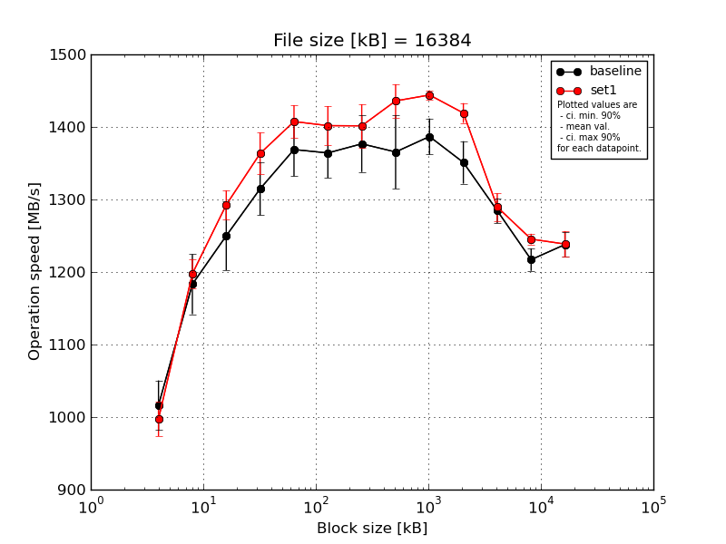
|
File size [kB] |
Block size [kB] |
| 4 |
8 |
16 |
32 |
64 |
128 |
256 |
512 |
1024 |
2048 |
4096 |
8192 |
16384 |
| baseline | 16384 | 1069.01 | 1249.31 | 1324.04 | 1373.5 | 1430.87 | 1413.69 | 1422.07 | 1435.12 | 1426.79 | 1392.88 | 1305.8 | 1232.85 | 1266.21 |
| 16384 | 1031.65 | 1160.94 | 1240.69 | 1295.97 | 1375.27 | 1357.08 | 1400.67 | 1394.45 | 1385.86 | 1321.88 | 1295.87 | 1229.53 | 1227.67 |
| 16384 | 1013.75 | 1197.52 | 1270.24 | 1332.43 | 1361.82 | 1371.5 | 1393.98 | 1354.21 | 1374.57 | 1362.87 | 1289.27 | 1192.16 | 1229.83 |
| 16384 | 984.19 | 1173.54 | 1195.39 | 1292.92 | 1329.02 | 1365.89 | 1332.98 | 1293.44 | 1355.82 | 1357.91 | 1265.73 | 1211.84 | 1243.59 |
| 16384 | 983.4 | 1134.67 | 1219.32 | 1278.78 | 1347.27 | 1312.54 | 1333.88 | 1350.23 | 1390.83 | 1319.69 | 1265.92 | 1218.77 | 1222.03 |
| mean val. |
1016.4 |
1183.2 |
1249.94 |
1314.72 |
1368.85 |
1364.14 |
1376.72 |
1365.49 |
1386.78 |
1351.05 |
1284.52 |
1217.03 |
1237.86 |
| standard dev. |
35.83 |
43.36 |
49.75 |
38.36 |
38.69 |
36.14 |
40.85 |
53.0 |
26.1 |
30.7 |
18.05 |
16.24 |
17.72 |
| ci. min. 90% |
982.24 |
1141.86 |
1202.5 |
1278.14 |
1331.96 |
1329.69 |
1337.77 |
1314.96 |
1361.89 |
1321.77 |
1267.31 |
1201.55 |
1220.97 |
| ci. max 90% |
1050.55 |
1224.53 |
1297.37 |
1351.29 |
1405.74 |
1398.6 |
1415.67 |
1416.02 |
1411.66 |
1380.32 |
1301.73 |
1232.51 |
1254.76 |
| geom. mean |
1015.9 |
1182.57 |
1249.15 |
1314.28 |
1368.42 |
1363.76 |
1376.23 |
1364.67 |
1386.58 |
1350.77 |
1284.42 |
1216.94 |
1237.76 |
| median |
1013.75 |
1173.54 |
1240.69 |
1295.97 |
1361.82 |
1365.89 |
1393.98 |
1354.21 |
1385.86 |
1357.91 |
1289.27 |
1218.77 |
1229.83 |
| first quartile |
984.19 |
1160.94 |
1219.32 |
1292.92 |
1347.27 |
1357.08 |
1333.88 |
1350.23 |
1374.57 |
1321.88 |
1265.92 |
1211.84 |
1227.67 |
| third quartile |
1031.65 |
1197.52 |
1270.24 |
1332.43 |
1375.27 |
1371.5 |
1400.67 |
1394.45 |
1390.83 |
1362.87 |
1295.87 |
1229.53 |
1243.59 |
| minimum |
983.4 |
1134.67 |
1195.39 |
1278.78 |
1329.02 |
1312.54 |
1332.98 |
1293.44 |
1355.82 |
1319.69 |
1265.73 |
1192.16 |
1222.03 |
| maximum |
1069.01 |
1249.31 |
1324.04 |
1373.5 |
1430.87 |
1413.69 |
1422.07 |
1435.12 |
1426.79 |
1392.88 |
1305.8 |
1232.85 |
1266.21 |
| set1 | 16384 | 1017.68 | 1176.82 | 1300.29 | 1403.87 | 1444.95 | 1431.91 | 1430.87 | 1446.5 | 1449.13 | 1433.96 | 1296.82 | 1242.44 | 1217.0 |
| 16384 | 958.03 | 1195.17 | 1281.22 | 1356.04 | 1389.71 | 1374.82 | 1371.5 | 1403.13 | 1434.2 | 1412.32 | 1255.69 | 1237.06 | 1235.05 |
| 16384 | 1014.33 | 1227.55 | 1317.31 | 1374.57 | 1387.67 | 1429.22 | 1419.82 | 1465.75 | 1449.0 | 1431.26 | 1300.59 | 1249.8 | 1268.75 |
| 16384 | 1008.63 | 1180.38 | 1263.04 | 1362.51 | 1415.06 | 1373.53 | 1364.14 | 1442.62 | 1447.57 | 1419.31 | 1288.55 | 1256.37 | 1237.13 |
| 16384 | 987.84 | 1208.63 | 1301.22 | 1320.14 | 1399.94 | 1399.56 | 1421.47 | 1421.32 | 1440.42 | 1399.1 | 1306.03 | 1241.27 | 1234.67 |
| mean val. |
997.3 |
1197.71 |
1292.62 |
1363.42 |
1407.47 |
1401.81 |
1401.56 |
1435.86 |
1444.06 |
1419.19 |
1289.54 |
1245.39 |
1238.52 |
| standard dev. |
24.83 |
20.94 |
20.9 |
30.37 |
23.59 |
28.24 |
31.19 |
24.16 |
6.57 |
14.27 |
19.96 |
7.67 |
18.75 |
| ci. min. 90% |
973.63 |
1177.75 |
1272.69 |
1334.47 |
1384.97 |
1374.88 |
1371.82 |
1412.83 |
1437.8 |
1405.58 |
1270.5 |
1238.08 |
1220.65 |
| ci. max 90% |
1020.97 |
1217.67 |
1312.54 |
1392.38 |
1429.96 |
1428.73 |
1431.3 |
1458.9 |
1450.33 |
1432.8 |
1308.57 |
1252.7 |
1256.39 |
| geom. mean |
997.05 |
1197.56 |
1292.48 |
1363.15 |
1407.31 |
1401.58 |
1401.28 |
1435.7 |
1444.05 |
1419.13 |
1289.41 |
1245.37 |
1238.41 |
| median |
1008.63 |
1195.17 |
1300.29 |
1362.51 |
1399.94 |
1399.56 |
1419.82 |
1442.62 |
1447.57 |
1419.31 |
1296.82 |
1242.44 |
1235.05 |
| first quartile |
987.84 |
1180.38 |
1281.22 |
1356.04 |
1389.71 |
1374.82 |
1371.5 |
1421.32 |
1440.42 |
1412.32 |
1288.55 |
1241.27 |
1234.67 |
| third quartile |
1014.33 |
1208.63 |
1301.22 |
1374.57 |
1415.06 |
1429.22 |
1421.47 |
1446.5 |
1449.0 |
1431.26 |
1300.59 |
1249.8 |
1237.13 |
| minimum |
958.03 |
1176.82 |
1263.04 |
1320.14 |
1387.67 |
1373.53 |
1364.14 |
1403.13 |
1434.2 |
1399.1 |
1255.69 |
1237.06 |
1217.0 |
| maximum |
1017.68 |
1227.55 |
1317.31 |
1403.87 |
1444.95 |
1431.91 |
1430.87 |
1465.75 |
1449.13 |
1433.96 |
1306.03 |
1256.37 |
1268.75 |
| baseline set1 difference |
-1.88 % |
1.23 % |
3.41 % |
3.7 % |
2.82 % |
2.76 % |
1.8 % |
5.15 % |
4.13 % |
5.04 % |
0.39 % |
2.33 % |
0.05 % |
| ttest p-value |
0.3559 |
0.5193 |
0.115 |
0.0567 |
0.0932 |
0.1036 |
0.3114 |
0.027 |
0.0014 |
0.002 |
0.6877 |
0.0077 |
0.9561 |
| ttest equality |
SAME |
SAME |
SAME |
DIFF |
DIFF |
SAME |
SAME |
DIFF |
DIFF |
DIFF |
SAME |
DIFF |
SAME |
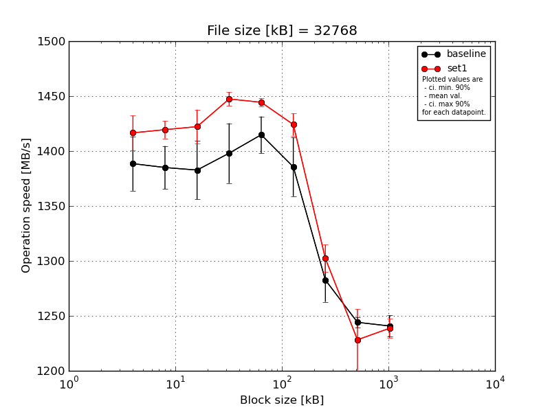
|
File size [kB] |
Block size [kB] |
| 64 |
128 |
256 |
512 |
1024 |
2048 |
4096 |
8192 |
16384 |
| baseline | 32768 | 1434.08 | 1412.49 | 1418.25 | 1448.56 | 1440.54 | 1427.24 | 1317.48 | 1251.92 | 1258.55 |
| 32768 | 1381.63 | 1391.48 | 1405.67 | 1390.1 | 1418.94 | 1400.88 | 1279.58 | 1243.63 | 1233.42 |
| 32768 | 1371.74 | 1364.91 | 1373.1 | 1383.96 | 1416.8 | 1359.68 | 1261.48 | 1242.38 | 1236.0 |
| 32768 | 1373.57 | 1364.09 | 1362.63 | 1388.47 | 1394.53 | 1373.86 | 1280.46 | 1243.68 | 1237.91 |
| 32768 | 1381.75 | 1392.22 | 1353.86 | 1379.25 | 1403.44 | 1366.48 | 1274.29 | 1239.02 | 1238.1 |
| mean val. |
1388.55 |
1385.04 |
1382.71 |
1398.07 |
1414.85 |
1385.63 |
1282.66 |
1244.13 |
1240.79 |
| standard dev. |
25.85 |
20.56 |
27.92 |
28.54 |
17.49 |
28.03 |
20.89 |
4.75 |
10.1 |
| ci. min. 90% |
1363.9 |
1365.43 |
1356.09 |
1370.86 |
1398.18 |
1358.9 |
1262.74 |
1239.6 |
1231.16 |
| ci. max 90% |
1413.2 |
1404.64 |
1409.32 |
1425.28 |
1431.53 |
1412.35 |
1302.57 |
1248.65 |
1250.43 |
| geom. mean |
1388.36 |
1384.91 |
1382.48 |
1397.84 |
1414.77 |
1385.4 |
1282.52 |
1244.12 |
1240.76 |
| median |
1381.63 |
1391.48 |
1373.1 |
1388.47 |
1416.8 |
1373.86 |
1279.58 |
1243.63 |
1237.91 |
| first quartile |
1373.57 |
1364.91 |
1362.63 |
1383.96 |
1403.44 |
1366.48 |
1274.29 |
1242.38 |
1236.0 |
| third quartile |
1381.75 |
1392.22 |
1405.67 |
1390.1 |
1418.94 |
1400.88 |
1280.46 |
1243.68 |
1238.1 |
| minimum |
1371.74 |
1364.09 |
1353.86 |
1379.25 |
1394.53 |
1359.68 |
1261.48 |
1239.02 |
1233.42 |
| maximum |
1434.08 |
1412.49 |
1418.25 |
1448.56 |
1440.54 |
1427.24 |
1317.48 |
1251.92 |
1258.55 |
| set1 | 32768 | 1418.0 | 1427.3 | 1417.43 | 1455.74 | 1450.6 | 1425.2 | 1300.6 | 1237.91 | 1233.38 |
| 32768 | 1396.82 | 1418.19 | 1405.35 | 1446.58 | 1445.02 | 1413.92 | 1289.48 | 1233.24 | 1234.86 |
| 32768 | 1437.1 | 1418.12 | 1443.39 | 1451.12 | 1440.32 | 1436.45 | 1323.74 | 1176.81 | 1255.05 |
| 32768 | 1403.94 | 1427.23 | 1410.19 | 1445.88 | 1443.0 | 1412.94 | 1294.34 | 1247.61 | 1236.67 |
| 32768 | 1427.11 | 1406.66 | 1434.78 | 1437.87 | 1443.0 | 1432.35 | 1303.04 | 1245.62 | 1233.61 |
| mean val. |
1416.59 |
1419.5 |
1422.23 |
1447.44 |
1444.39 |
1424.17 |
1302.24 |
1228.24 |
1238.71 |
| standard dev. |
16.46 |
8.5 |
16.26 |
6.66 |
3.85 |
10.61 |
13.14 |
29.33 |
9.23 |
| ci. min. 90% |
1400.9 |
1411.4 |
1406.72 |
1441.09 |
1440.72 |
1414.06 |
1289.71 |
1200.28 |
1229.92 |
| ci. max 90% |
1432.29 |
1427.61 |
1437.74 |
1453.78 |
1448.06 |
1434.28 |
1314.77 |
1256.2 |
1247.51 |
| geom. mean |
1416.52 |
1419.48 |
1422.15 |
1447.42 |
1444.39 |
1424.14 |
1302.19 |
1227.95 |
1238.69 |
| median |
1418.0 |
1418.19 |
1417.43 |
1446.58 |
1443.0 |
1425.2 |
1300.6 |
1237.91 |
1234.86 |
| first quartile |
1403.94 |
1418.12 |
1410.19 |
1445.88 |
1443.0 |
1413.92 |
1294.34 |
1233.24 |
1233.61 |
| third quartile |
1427.11 |
1427.23 |
1434.78 |
1451.12 |
1445.02 |
1432.35 |
1303.04 |
1245.62 |
1236.67 |
| minimum |
1396.82 |
1406.66 |
1405.35 |
1437.87 |
1440.32 |
1412.94 |
1289.48 |
1176.81 |
1233.38 |
| maximum |
1437.1 |
1427.3 |
1443.39 |
1455.74 |
1450.6 |
1436.45 |
1323.74 |
1247.61 |
1255.05 |
| baseline set1 difference |
2.02 % |
2.49 % |
2.86 % |
3.53 % |
2.09 % |
2.78 % |
1.53 % |
-1.28 % |
-0.17 % |
| ttest p-value |
0.075 |
0.0085 |
0.0256 |
0.0055 |
0.0061 |
0.0206 |
0.1139 |
0.266 |
0.7426 |
| ttest equality |
DIFF |
DIFF |
DIFF |
DIFF |
DIFF |
DIFF |
SAME |
SAME |
SAME |
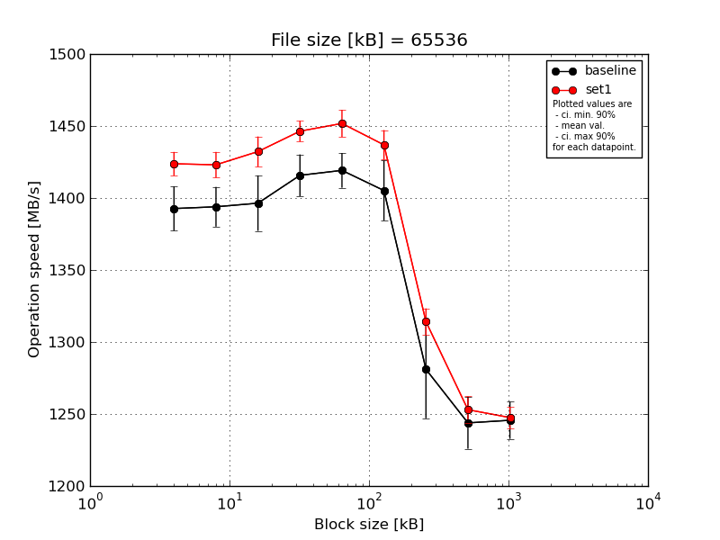
|
File size [kB] |
Block size [kB] |
| 64 |
128 |
256 |
512 |
1024 |
2048 |
4096 |
8192 |
16384 |
| baseline | 65536 | 1420.58 | 1409.5 | 1427.81 | 1435.17 | 1437.17 | 1431.34 | 1307.38 | 1267.53 | 1266.07 |
| 65536 | 1387.08 | 1404.25 | 1402.71 | 1423.36 | 1425.2 | 1411.74 | 1298.23 | 1249.0 | 1244.05 |
| 65536 | 1389.04 | 1384.17 | 1375.11 | 1415.43 | 1418.22 | 1376.16 | 1286.98 | 1216.89 | 1238.01 |
| 65536 | 1388.01 | 1397.22 | 1391.15 | 1410.56 | 1410.32 | 1416.18 | 1294.03 | 1249.97 | 1230.27 |
| 65536 | 1378.65 | 1374.39 | 1385.25 | 1394.27 | 1405.02 | 1390.55 | 1218.53 | 1235.71 | 1249.8 |
| mean val. |
1392.67 |
1393.91 |
1396.41 |
1415.76 |
1419.18 |
1405.2 |
1281.03 |
1243.82 |
1245.64 |
| standard dev. |
16.14 |
14.46 |
20.2 |
15.19 |
12.65 |
21.82 |
35.71 |
18.83 |
13.53 |
| ci. min. 90% |
1377.29 |
1380.12 |
1377.15 |
1401.27 |
1407.13 |
1384.39 |
1246.99 |
1225.87 |
1232.74 |
| ci. max 90% |
1408.06 |
1407.7 |
1415.66 |
1430.24 |
1431.24 |
1426.0 |
1315.07 |
1261.77 |
1258.54 |
| geom. mean |
1392.6 |
1393.85 |
1396.29 |
1415.69 |
1419.14 |
1405.06 |
1280.62 |
1243.71 |
1245.58 |
| median |
1388.01 |
1397.22 |
1391.15 |
1415.43 |
1418.22 |
1411.74 |
1294.03 |
1249.0 |
1244.05 |
| first quartile |
1387.08 |
1384.17 |
1385.25 |
1410.56 |
1410.32 |
1390.55 |
1286.98 |
1235.71 |
1238.01 |
| third quartile |
1389.04 |
1404.25 |
1402.71 |
1423.36 |
1425.2 |
1416.18 |
1298.23 |
1249.97 |
1249.8 |
| minimum |
1378.65 |
1374.39 |
1375.11 |
1394.27 |
1405.02 |
1376.16 |
1218.53 |
1216.89 |
1230.27 |
| maximum |
1420.58 |
1409.5 |
1427.81 |
1435.17 |
1437.17 |
1431.34 |
1307.38 |
1267.53 |
1266.07 |
| set1 | 65536 | 1416.65 | 1436.45 | 1439.79 | 1449.93 | 1469.1 | 1437.43 | 1316.53 | 1248.07 | 1242.04 |
| 65536 | 1425.96 | 1413.9 | 1412.96 | 1443.55 | 1450.56 | 1419.89 | 1314.77 | 1247.01 | 1247.17 |
| 65536 | 1419.64 | 1428.7 | 1438.43 | 1457.79 | 1448.19 | 1447.7 | 1328.43 | 1268.68 | 1260.19 |
| 65536 | 1418.73 | 1420.14 | 1434.3 | 1438.78 | 1445.97 | 1444.34 | 1307.94 | 1255.89 | 1240.63 |
| 65536 | 1437.88 | 1416.11 | 1435.72 | 1441.99 | 1445.12 | 1435.13 | 1303.12 | 1245.31 | 1247.66 |
| mean val. |
1423.77 |
1423.06 |
1432.24 |
1446.41 |
1451.79 |
1436.9 |
1314.15 |
1252.99 |
1247.54 |
| standard dev. |
8.62 |
9.38 |
10.99 |
7.55 |
9.91 |
10.78 |
9.62 |
9.67 |
7.72 |
| ci. min. 90% |
1415.56 |
1414.12 |
1421.76 |
1439.21 |
1442.34 |
1426.62 |
1304.98 |
1243.78 |
1240.18 |
| ci. max 90% |
1431.99 |
1432.0 |
1442.72 |
1453.6 |
1461.23 |
1447.17 |
1323.33 |
1262.21 |
1254.9 |
| geom. mean |
1423.75 |
1423.04 |
1432.21 |
1446.39 |
1451.76 |
1436.87 |
1314.13 |
1252.96 |
1247.52 |
| median |
1419.64 |
1420.14 |
1435.72 |
1443.55 |
1448.19 |
1437.43 |
1314.77 |
1248.07 |
1247.17 |
| first quartile |
1418.73 |
1416.11 |
1434.3 |
1441.99 |
1445.97 |
1435.13 |
1307.94 |
1247.01 |
1242.04 |
| third quartile |
1425.96 |
1428.7 |
1438.43 |
1449.93 |
1450.56 |
1444.34 |
1316.53 |
1255.89 |
1247.66 |
| minimum |
1416.65 |
1413.9 |
1412.96 |
1438.78 |
1445.12 |
1419.89 |
1303.12 |
1245.31 |
1240.63 |
| maximum |
1437.88 |
1436.45 |
1439.79 |
1457.79 |
1469.1 |
1447.7 |
1328.43 |
1268.68 |
1260.19 |
| baseline set1 difference |
2.23 % |
2.09 % |
2.57 % |
2.16 % |
2.3 % |
2.26 % |
2.59 % |
0.74 % |
0.15 % |
| ttest p-value |
0.0052 |
0.0054 |
0.0083 |
0.0037 |
0.0019 |
0.0195 |
0.0801 |
0.3609 |
0.7921 |
| ttest equality |
DIFF |
DIFF |
DIFF |
DIFF |
DIFF |
DIFF |
DIFF |
SAME |
SAME |
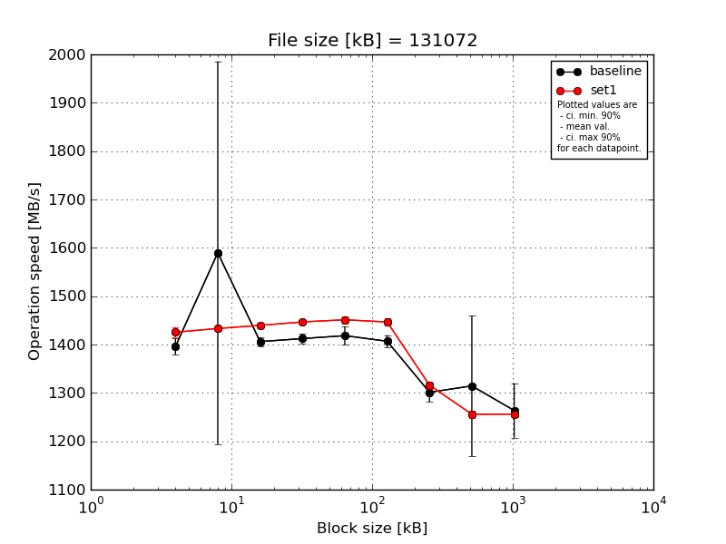
|
File size [kB] |
Block size [kB] |
| 64 |
128 |
256 |
512 |
1024 |
2048 |
4096 |
8192 |
16384 |
| baseline | 131072 | 1424.58 | 1422.54 | 1419.97 | 1426.28 | 1448.65 | 1423.45 | 1311.65 | 1251.25 | 1261.18 |
| 131072 | 1391.98 | 1412.24 | 1404.19 | 1420.23 | 1427.87 | 1413.3 | 1292.72 | 1242.99 | 1240.97 |
| 131072 | 1377.83 | 1401.28 | 1409.41 | 1406.55 | 1400.96 | 1388.62 | 1292.69 | 1248.21 | 1364.87 |
| 131072 | 1393.78 | 2332.28 | 1395.06 | 1409.15 | 1411.51 | 1399.18 | 1331.29 | 1586.92 | 1237.18 |
| 131072 | 1391.14 | 1380.32 | 1401.73 | 1399.46 | 1402.89 | 1409.58 | 1278.03 | 1242.8 | 1213.9 |
| mean val. |
1395.86 |
1589.73 |
1406.07 |
1412.33 |
1418.38 |
1406.83 |
1301.28 |
1314.44 |
1263.62 |
| standard dev. |
17.26 |
415.39 |
9.32 |
10.8 |
19.98 |
13.38 |
20.59 |
152.37 |
59.04 |
| ci. min. 90% |
1379.4 |
1193.7 |
1397.18 |
1402.04 |
1399.33 |
1394.07 |
1281.65 |
1169.17 |
1207.34 |
| ci. max 90% |
1412.32 |
1985.76 |
1414.96 |
1422.63 |
1437.43 |
1419.58 |
1320.91 |
1459.7 |
1319.91 |
| geom. mean |
1395.78 |
1554.0 |
1406.05 |
1412.3 |
1418.26 |
1406.78 |
1301.15 |
1308.01 |
1262.55 |
| median |
1391.98 |
1412.24 |
1404.19 |
1409.15 |
1411.51 |
1409.58 |
1292.72 |
1248.21 |
1240.97 |
| first quartile |
1391.14 |
1401.28 |
1401.73 |
1406.55 |
1402.89 |
1399.18 |
1292.69 |
1242.99 |
1237.18 |
| third quartile |
1393.78 |
1422.54 |
1409.41 |
1420.23 |
1427.87 |
1413.3 |
1311.65 |
1251.25 |
1261.18 |
| minimum |
1377.83 |
1380.32 |
1395.06 |
1399.46 |
1400.96 |
1388.62 |
1278.03 |
1242.8 |
1213.9 |
| maximum |
1424.58 |
2332.28 |
1419.97 |
1426.28 |
1448.65 |
1423.45 |
1331.29 |
1586.92 |
1364.87 |
| set1 | 131072 | 1436.89 | 1439.99 | 1443.11 | 1443.34 | 1463.01 | 1457.0 | 1320.39 | 1260.01 | 1257.43 |
| 131072 | 1420.19 | 1436.7 | 1437.44 | 1446.44 | 1443.42 | 1439.9 | 1302.72 | 1243.45 | 1254.04 |
| 131072 | 1427.1 | 1432.78 | 1448.44 | 1451.36 | 1454.86 | 1442.41 | 1323.35 | 1261.24 | 1248.14 |
| 131072 | 1433.79 | 1428.46 | 1435.22 | 1450.14 | 1449.37 | 1454.48 | 1317.9 | 1259.02 | 1265.91 |
| 131072 | 1408.87 | 1428.32 | 1433.75 | 1442.28 | 1445.4 | 1439.21 | 1316.03 | 1255.48 | 1253.88 |
| mean val. |
1425.37 |
1433.25 |
1439.59 |
1446.71 |
1451.21 |
1446.6 |
1316.08 |
1255.84 |
1255.88 |
| standard dev. |
11.24 |
5.12 |
6.09 |
4.01 |
7.91 |
8.47 |
7.96 |
7.25 |
6.53 |
| ci. min. 90% |
1414.65 |
1428.37 |
1433.78 |
1442.89 |
1443.67 |
1438.52 |
1308.49 |
1248.93 |
1249.66 |
| ci. max 90% |
1436.09 |
1438.13 |
1445.4 |
1450.54 |
1458.75 |
1454.68 |
1323.66 |
1262.76 |
1262.1 |
| geom. mean |
1425.33 |
1433.24 |
1439.58 |
1446.71 |
1451.19 |
1446.58 |
1316.06 |
1255.83 |
1255.87 |
| median |
1427.1 |
1432.78 |
1437.44 |
1446.44 |
1449.37 |
1442.41 |
1317.9 |
1259.02 |
1254.04 |
| first quartile |
1420.19 |
1428.46 |
1435.22 |
1443.34 |
1445.4 |
1439.9 |
1316.03 |
1255.48 |
1253.88 |
| third quartile |
1433.79 |
1436.7 |
1443.11 |
1450.14 |
1454.86 |
1454.48 |
1320.39 |
1260.01 |
1257.43 |
| minimum |
1408.87 |
1428.32 |
1433.75 |
1442.28 |
1443.42 |
1439.21 |
1302.72 |
1243.45 |
1248.14 |
| maximum |
1436.89 |
1439.99 |
1448.44 |
1451.36 |
1463.01 |
1457.0 |
1323.35 |
1261.24 |
1265.91 |
| baseline set1 difference |
2.11 % |
-9.84 % |
2.38 % |
2.43 % |
2.31 % |
2.83 % |
1.14 % |
-4.46 % |
-0.61 % |
| ttest p-value |
0.0126 |
0.4241 |
0.0001 |
0.0002 |
0.0091 |
0.0005 |
0.1722 |
0.4154 |
0.7782 |
| ttest equality |
DIFF |
SAME |
DIFF |
DIFF |
DIFF |
DIFF |
SAME |
SAME |
SAME |
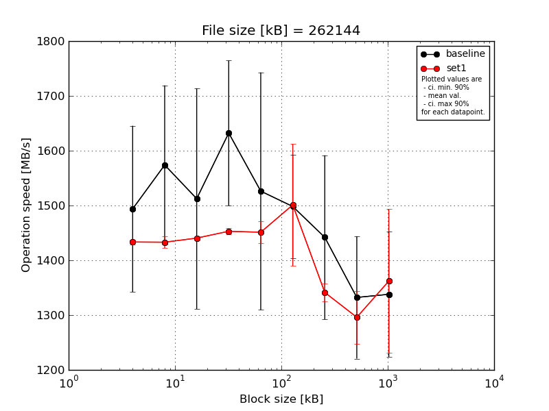
|
File size [kB] |
Block size [kB] |
| 64 |
128 |
256 |
512 |
1024 |
2048 |
4096 |
8192 |
16384 |
| baseline | 262144 | 1440.4 | 1601.52 | 1428.83 | 1517.45 | 1445.76 | 1445.09 | 1372.21 | 1269.67 | 1300.32 |
| 262144 | 1480.53 | 1484.58 | 1421.04 | 1599.6 | 1428.11 | 1426.2 | 1400.98 | 1255.83 | 1255.46 |
| 262144 | 1377.97 | 1584.69 | 1394.52 | 1616.28 | 1423.53 | 1409.45 | 1301.47 | 1392.88 | 1347.77 |
| 262144 | 1769.66 | 1802.85 | 1889.43 | 1870.67 | 1931.86 | 1608.11 | 1710.4 | 1509.88 | 1539.85 |
| 262144 | 1400.7 | 1396.05 | 1428.48 | 1557.42 | 1401.85 | 1602.06 | 1424.46 | 1232.88 | 1246.42 |
| mean val. |
1493.85 |
1573.94 |
1512.46 |
1632.29 |
1526.22 |
1498.18 |
1441.91 |
1332.22 |
1337.96 |
| standard dev. |
159.07 |
152.4 |
211.2 |
138.69 |
227.3 |
98.42 |
157.04 |
117.11 |
119.85 |
| ci. min. 90% |
1342.2 |
1428.64 |
1311.11 |
1500.06 |
1309.52 |
1404.35 |
1292.19 |
1220.57 |
1223.7 |
| ci. max 90% |
1645.5 |
1719.24 |
1713.81 |
1764.52 |
1742.92 |
1592.02 |
1591.62 |
1443.88 |
1452.23 |
| geom. mean |
1487.56 |
1568.15 |
1501.91 |
1627.83 |
1514.19 |
1495.63 |
1435.51 |
1328.25 |
1333.9 |
| median |
1440.4 |
1584.69 |
1428.48 |
1599.6 |
1428.11 |
1445.09 |
1400.98 |
1269.67 |
1300.32 |
| first quartile |
1400.7 |
1484.58 |
1421.04 |
1557.42 |
1423.53 |
1426.2 |
1372.21 |
1255.83 |
1255.46 |
| third quartile |
1480.53 |
1601.52 |
1428.83 |
1616.28 |
1445.76 |
1602.06 |
1424.46 |
1392.88 |
1347.77 |
| minimum |
1377.97 |
1396.05 |
1394.52 |
1517.45 |
1401.85 |
1409.45 |
1301.47 |
1232.88 |
1246.42 |
| maximum |
1769.66 |
1802.85 |
1889.43 |
1870.67 |
1931.86 |
1608.11 |
1710.4 |
1509.88 |
1539.85 |
| set1 | 262144 | 1435.68 | 1447.24 | 1440.64 | 1450.01 | 1461.74 | 1459.3 | 1325.9 | 1263.78 | 1381.11 |
| 262144 | 1440.06 | 1437.09 | 1443.79 | 1453.08 | 1463.45 | 1447.2 | 1352.27 | 1263.87 | 1260.52 |
| 262144 | 1428.51 | 1420.61 | 1434.82 | 1446.3 | 1413.62 | 1449.34 | 1340.34 | 1274.02 | 1299.98 |
| 262144 | 1432.15 | 1422.02 | 1444.39 | 1453.97 | 1460.64 | 1709.47 | 1324.43 | 1295.4 | 1593.5 |
| 262144 | 1430.41 | 1438.14 | 1438.97 | 1461.6 | 1456.63 | 1440.13 | 1363.73 | 1383.39 | 1275.07 |
| mean val. |
1433.36 |
1433.02 |
1440.52 |
1452.99 |
1451.22 |
1501.09 |
1341.33 |
1296.09 |
1362.04 |
| standard dev. |
4.58 |
11.4 |
3.89 |
5.67 |
21.17 |
116.69 |
16.93 |
50.47 |
137.53 |
| ci. min. 90% |
1428.99 |
1422.15 |
1436.81 |
1447.59 |
1431.04 |
1389.84 |
1325.19 |
1247.97 |
1230.91 |
| ci. max 90% |
1437.73 |
1443.89 |
1444.23 |
1458.4 |
1471.4 |
1612.34 |
1357.47 |
1344.21 |
1493.16 |
| geom. mean |
1433.36 |
1432.98 |
1440.52 |
1452.99 |
1451.09 |
1497.69 |
1341.25 |
1295.33 |
1356.81 |
| median |
1432.15 |
1437.09 |
1440.64 |
1453.08 |
1460.64 |
1449.34 |
1340.34 |
1274.02 |
1299.98 |
| first quartile |
1430.41 |
1422.02 |
1438.97 |
1450.01 |
1456.63 |
1447.2 |
1325.9 |
1263.87 |
1275.07 |
| third quartile |
1435.68 |
1438.14 |
1443.79 |
1453.97 |
1461.74 |
1459.3 |
1352.27 |
1295.4 |
1381.11 |
| minimum |
1428.51 |
1420.61 |
1434.82 |
1446.3 |
1413.62 |
1440.13 |
1324.43 |
1263.78 |
1260.52 |
| maximum |
1440.06 |
1447.24 |
1444.39 |
1461.6 |
1463.45 |
1709.47 |
1363.73 |
1383.39 |
1593.5 |
| baseline set1 difference |
-4.05 % |
-8.95 % |
-4.76 % |
-10.98 % |
-4.91 % |
0.19 % |
-6.97 % |
-2.71 % |
1.8 % |
| ttest p-value |
0.4201 |
0.0731 |
0.4682 |
0.0203 |
0.4835 |
0.9671 |
0.1923 |
0.544 |
0.7754 |
| ttest equality |
SAME |
DIFF |
SAME |
DIFF |
SAME |
SAME |
SAME |
SAME |
SAME |
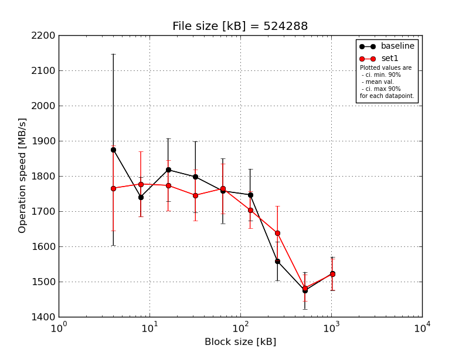
|
File size [kB] |
Block size [kB] |
| 64 |
128 |
256 |
512 |
1024 |
2048 |
4096 |
8192 |
16384 |
| baseline | 524288 | 1827.39 | 1682.81 | 1792.29 | 1758.14 | 1885.49 | 1851.67 | 1520.07 | 1498.66 | 1490.48 |
| 524288 | 1645.72 | 1771.15 | 1754.54 | 1674.68 | 1677.82 | 1745.31 | 1503.37 | 1554.43 | 1585.55 |
| 524288 | 1801.46 | 1741.34 | 1910.49 | 1752.31 | 1648.93 | 1636.1 | 1534.08 | 1465.85 | 1568.86 |
| 524288 | 2370.06 | 1821.2 | 1710.15 | 1948.03 | 1766.22 | 1766.54 | 1585.59 | 1446.03 | 1491.71 |
| 524288 | 1731.71 | 1687.62 | 1920.56 | 1855.43 | 1809.49 | 1734.0 | 1645.52 | 1409.11 | 1479.68 |
| mean val. |
1875.27 |
1740.83 |
1817.61 |
1797.72 |
1757.59 |
1746.72 |
1557.73 |
1474.81 |
1523.26 |
| standard dev. |
285.42 |
58.26 |
94.06 |
105.7 |
96.56 |
77.15 |
57.91 |
55.08 |
49.82 |
| ci. min. 90% |
1603.15 |
1685.28 |
1727.93 |
1696.94 |
1665.53 |
1673.17 |
1502.51 |
1422.3 |
1475.76 |
| ci. max 90% |
2147.39 |
1796.37 |
1907.29 |
1898.5 |
1849.65 |
1820.28 |
1612.94 |
1527.33 |
1570.76 |
| geom. mean |
1859.56 |
1740.05 |
1815.67 |
1795.26 |
1755.47 |
1745.35 |
1556.88 |
1474.0 |
1522.61 |
| median |
1801.46 |
1741.34 |
1792.29 |
1758.14 |
1766.22 |
1745.31 |
1534.08 |
1465.85 |
1491.71 |
| first quartile |
1731.71 |
1687.62 |
1754.54 |
1752.31 |
1677.82 |
1734.0 |
1520.07 |
1446.03 |
1490.48 |
| third quartile |
1827.39 |
1771.15 |
1910.49 |
1855.43 |
1809.49 |
1766.54 |
1585.59 |
1498.66 |
1568.86 |
| minimum |
1645.72 |
1682.81 |
1710.15 |
1674.68 |
1648.93 |
1636.1 |
1503.37 |
1409.11 |
1479.68 |
| maximum |
2370.06 |
1821.2 |
1920.56 |
1948.03 |
1885.49 |
1851.67 |
1645.52 |
1554.43 |
1585.55 |
| set1 | 524288 | 1643.34 | 1888.5 | 1687.5 | 1849.8 | 1777.99 | 1641.81 | 1706.78 | 1460.95 | 1518.07 |
| 524288 | 1712.43 | 1671.21 | 1779.98 | 1788.29 | 1721.48 | 1675.01 | 1605.27 | 1522.37 | 1549.6 |
| 524288 | 1670.29 | 1779.42 | 1716.83 | 1698.48 | 1888.2 | 1722.14 | 1674.07 | 1427.43 | 1519.91 |
| 524288 | 1914.86 | 1856.56 | 1804.1 | 1653.72 | 1705.99 | 1691.74 | 1691.62 | 1484.22 | 1448.01 |
| 524288 | 1887.74 | 1691.68 | 1878.64 | 1737.61 | 1728.23 | 1787.39 | 1510.34 | 1515.19 | 1569.17 |
| mean val. |
1765.73 |
1777.47 |
1773.41 |
1745.58 |
1764.38 |
1703.62 |
1637.62 |
1482.03 |
1520.95 |
| standard dev. |
126.55 |
96.49 |
75.23 |
76.5 |
74.28 |
55.09 |
81.05 |
39.23 |
46.03 |
| ci. min. 90% |
1645.08 |
1685.49 |
1701.68 |
1672.65 |
1693.56 |
1651.09 |
1560.35 |
1444.62 |
1477.07 |
| ci. max 90% |
1886.38 |
1869.46 |
1845.13 |
1818.51 |
1835.2 |
1756.14 |
1714.88 |
1519.43 |
1564.84 |
| geom. mean |
1762.15 |
1775.38 |
1772.14 |
1744.25 |
1763.16 |
1702.91 |
1635.97 |
1481.61 |
1520.39 |
| median |
1712.43 |
1779.42 |
1779.98 |
1737.61 |
1728.23 |
1691.74 |
1674.07 |
1484.22 |
1519.91 |
| first quartile |
1670.29 |
1691.68 |
1716.83 |
1698.48 |
1721.48 |
1675.01 |
1605.27 |
1460.95 |
1518.07 |
| third quartile |
1887.74 |
1856.56 |
1804.1 |
1788.29 |
1777.99 |
1722.14 |
1691.62 |
1515.19 |
1549.6 |
| minimum |
1643.34 |
1671.21 |
1687.5 |
1653.72 |
1705.99 |
1641.81 |
1510.34 |
1427.43 |
1448.01 |
| maximum |
1914.86 |
1888.5 |
1878.64 |
1849.8 |
1888.2 |
1787.39 |
1706.78 |
1522.37 |
1569.17 |
| baseline set1 difference |
-5.84 % |
2.11 % |
-2.43 % |
-2.9 % |
0.39 % |
-2.47 % |
5.13 % |
0.49 % |
-0.15 % |
| ttest p-value |
0.4553 |
0.4879 |
0.4357 |
0.3977 |
0.9039 |
0.339 |
0.1107 |
0.8174 |
0.9413 |
| ttest equality |
SAME |
SAME |
SAME |
SAME |
SAME |
SAME |
SAME |
SAME |
SAME |
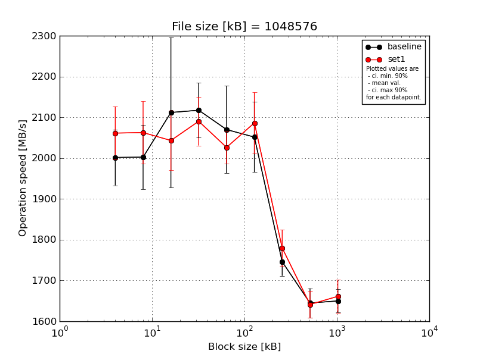
|
File size [kB] |
Block size [kB] |
| 64 |
128 |
256 |
512 |
1024 |
2048 |
4096 |
8192 |
16384 |
| baseline | 1048576 | 2086.29 | 2143.73 | 2444.29 | 2168.04 | 2170.36 | 1960.67 | 1710.94 | 1649.9 | 1618.71 |
| 1048576 | 1922.15 | 1967.33 | 1975.79 | 2130.76 | 2111.76 | 1955.55 | 1786.42 | 1672.95 | 1637.84 |
| 1048576 | 1930.73 | 1968.99 | 2002.92 | 1993.3 | 2168.01 | 2069.77 | 1712.16 | 1605.72 | 1699.27 |
| 1048576 | 2039.1 | 1999.86 | 2022.15 | 2152.7 | 1945.39 | 2152.8 | 1780.77 | 1607.08 | 1643.0 |
| 1048576 | 2029.84 | 1931.69 | 2113.83 | 2141.92 | 1954.38 | 2118.55 | 1739.3 | 1688.44 | 1650.8 |
| mean val. |
2001.62 |
2002.32 |
2111.8 |
2117.34 |
2069.98 |
2051.47 |
1745.92 |
1644.82 |
1649.92 |
| standard dev. |
71.96 |
82.65 |
192.97 |
70.7 |
112.16 |
90.2 |
36.27 |
37.66 |
30.02 |
| ci. min. 90% |
1933.02 |
1923.52 |
1927.82 |
2049.94 |
1963.05 |
1965.47 |
1711.34 |
1608.91 |
1621.3 |
| ci. max 90% |
2070.22 |
2081.12 |
2295.77 |
2184.74 |
2176.91 |
2137.47 |
1780.5 |
1680.72 |
1678.54 |
| geom. mean |
2000.58 |
2000.99 |
2105.18 |
2116.37 |
2067.52 |
2049.88 |
1745.62 |
1644.47 |
1649.71 |
| median |
2029.84 |
1968.99 |
2022.15 |
2141.92 |
2111.76 |
2069.77 |
1739.3 |
1649.9 |
1643.0 |
| first quartile |
1930.73 |
1967.33 |
2002.92 |
2130.76 |
1954.38 |
1960.67 |
1712.16 |
1607.08 |
1637.84 |
| third quartile |
2039.1 |
1999.86 |
2113.83 |
2152.7 |
2168.01 |
2118.55 |
1780.77 |
1672.95 |
1650.8 |
| minimum |
1922.15 |
1931.69 |
1975.79 |
1993.3 |
1945.39 |
1955.55 |
1710.94 |
1605.72 |
1618.71 |
| maximum |
2086.29 |
2143.73 |
2444.29 |
2168.04 |
2170.36 |
2152.8 |
1786.42 |
1688.44 |
1699.27 |
| set1 | 1048576 | 2140.21 | 2108.79 | 1998.94 | 2062.02 | 2060.74 | 2148.83 | 1832.37 | 1622.23 | 1704.32 |
| 1048576 | 2107.36 | 1944.25 | 2151.28 | 2093.24 | 2041.19 | 2179.21 | 1803.72 | 1692.49 | 1635.13 |
| 1048576 | 2052.44 | 2153.85 | 2096.93 | 2035.61 | 1994.72 | 1993.69 | 1745.42 | 1643.45 | 1709.88 |
| 1048576 | 1961.55 | 2076.24 | 1982.57 | 2064.81 | 2063.1 | 2081.9 | 1799.59 | 1600.23 | 1620.16 |
| 1048576 | 2044.93 | 2029.74 | 1986.2 | 2195.93 | 1971.71 | 2028.06 | 1717.97 | 1647.91 | 1636.62 |
| mean val. |
2061.3 |
2062.57 |
2043.18 |
2090.32 |
2026.29 |
2086.34 |
1779.82 |
1641.26 |
1661.22 |
| standard dev. |
68.27 |
80.21 |
76.57 |
62.46 |
41.05 |
78.31 |
46.72 |
34.35 |
42.42 |
| ci. min. 90% |
1996.21 |
1986.1 |
1970.18 |
2030.77 |
1987.16 |
2011.67 |
1735.27 |
1608.52 |
1620.78 |
| ci. max 90% |
2126.39 |
2139.05 |
2116.19 |
2149.87 |
2065.43 |
2161.0 |
1824.36 |
1674.01 |
1701.66 |
| geom. mean |
2060.39 |
2061.31 |
2042.05 |
2089.59 |
2025.96 |
2085.16 |
1779.32 |
1640.98 |
1660.79 |
| median |
2052.44 |
2076.24 |
1998.94 |
2064.81 |
2041.19 |
2081.9 |
1799.59 |
1643.45 |
1636.62 |
| first quartile |
2044.93 |
2029.74 |
1986.2 |
2062.02 |
1994.72 |
2028.06 |
1745.42 |
1622.23 |
1635.13 |
| third quartile |
2107.36 |
2108.79 |
2096.93 |
2093.24 |
2060.74 |
2148.83 |
1803.72 |
1647.91 |
1704.32 |
| minimum |
1961.55 |
1944.25 |
1982.57 |
2035.61 |
1971.71 |
1993.69 |
1717.97 |
1600.23 |
1620.16 |
| maximum |
2140.21 |
2153.85 |
2151.28 |
2195.93 |
2063.1 |
2179.21 |
1832.37 |
1692.49 |
1709.88 |
| baseline set1 difference |
2.98 % |
3.01 % |
-3.25 % |
-1.28 % |
-2.11 % |
1.7 % |
1.94 % |
-0.22 % |
0.68 % |
| ttest p-value |
0.2154 |
0.2757 |
0.481 |
0.5397 |
0.4371 |
0.5323 |
0.236 |
0.8799 |
0.6399 |
| ttest equality |
SAME |
SAME |
SAME |
SAME |
SAME |
SAME |
SAME |
SAME |
SAME |
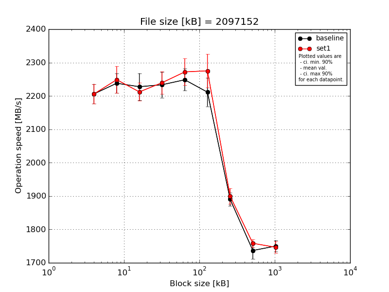
|
File size [kB] |
Block size [kB] |
| 64 |
128 |
256 |
512 |
1024 |
2048 |
4096 |
8192 |
16384 |
| baseline | 2097152 | 2203.15 | 2252.4 | 2173.94 | 2285.0 | 2228.39 | 2290.2 | 1917.86 | 1745.07 | 1764.35 |
| 2097152 | 2245.84 | 2253.15 | 2194.99 | 2268.41 | 2261.41 | 2183.66 | 1898.02 | 1746.08 | 1728.36 |
| 2097152 | 2196.63 | 2220.4 | 2254.73 | 2205.87 | 2198.17 | 2196.73 | 1867.49 | 1716.35 | 1741.79 |
| 2097152 | 2222.94 | 2193.18 | 2275.71 | 2214.68 | 2275.77 | 2201.93 | 1897.08 | 1704.6 | 1772.44 |
| 2097152 | 2162.26 | 2271.08 | 2238.94 | 2193.86 | 2278.51 | 2184.41 | 1871.37 | 1772.09 | 1743.36 |
| mean val. |
2206.16 |
2238.04 |
2227.66 |
2233.57 |
2248.45 |
2211.39 |
1890.36 |
1736.84 |
1750.06 |
| standard dev. |
31.16 |
31.02 |
42.19 |
40.5 |
34.45 |
44.76 |
20.88 |
26.71 |
17.96 |
| ci. min. 90% |
2176.46 |
2208.46 |
2187.44 |
2194.96 |
2215.6 |
2168.72 |
1870.46 |
1711.37 |
1732.94 |
| ci. max 90% |
2235.87 |
2267.62 |
2267.89 |
2272.17 |
2281.3 |
2254.06 |
1910.27 |
1762.31 |
1767.18 |
| geom. mean |
2205.99 |
2237.87 |
2227.34 |
2233.27 |
2248.24 |
2211.03 |
1890.27 |
1736.67 |
1749.98 |
| median |
2203.15 |
2252.4 |
2238.94 |
2214.68 |
2261.41 |
2196.73 |
1897.08 |
1745.07 |
1743.36 |
| first quartile |
2196.63 |
2220.4 |
2194.99 |
2205.87 |
2228.39 |
2184.41 |
1871.37 |
1716.35 |
1741.79 |
| third quartile |
2222.94 |
2253.15 |
2254.73 |
2268.41 |
2275.77 |
2201.93 |
1898.02 |
1746.08 |
1764.35 |
| minimum |
2162.26 |
2193.18 |
2173.94 |
2193.86 |
2198.17 |
2183.66 |
1867.49 |
1704.6 |
1728.36 |
| maximum |
2245.84 |
2271.08 |
2275.71 |
2285.0 |
2278.51 |
2290.2 |
1917.86 |
1772.09 |
1772.44 |
| set1 | 2097152 | 2224.64 | 2192.08 | 2241.82 | 2293.02 | 2330.99 | 2331.65 | 1870.06 | 1750.75 | 1743.92 |
| 2097152 | 2167.59 | 2285.22 | 2177.5 | 2203.15 | 2240.86 | 2222.67 | 1883.54 | 1772.37 | 1718.92 |
| 2097152 | 2234.61 | 2240.96 | 2196.55 | 2232.39 | 2301.25 | 2278.33 | 1932.34 | 1770.46 | 1757.3 |
| 2097152 | 2225.56 | 2294.25 | 2204.66 | 2217.15 | 2235.45 | 2322.35 | 1913.97 | 1745.91 | 1766.96 |
| 2097152 | 2177.84 | 2231.11 | 2240.14 | 2252.86 | 2251.66 | 2221.35 | 1898.42 | 1752.74 | 1745.85 |
| mean val. |
2206.05 |
2248.72 |
2212.13 |
2239.71 |
2272.04 |
2275.27 |
1899.67 |
1758.45 |
1746.59 |
| standard dev. |
30.89 |
41.78 |
28.12 |
35.05 |
42.0 |
52.63 |
24.55 |
12.12 |
18.05 |
| ci. min. 90% |
2176.6 |
2208.89 |
2185.32 |
2206.3 |
2232.0 |
2225.09 |
1876.26 |
1746.89 |
1729.38 |
| ci. max 90% |
2235.5 |
2288.56 |
2238.94 |
2273.13 |
2312.08 |
2325.44 |
1923.07 |
1770.0 |
1763.8 |
| geom. mean |
2205.87 |
2248.41 |
2211.99 |
2239.5 |
2271.73 |
2274.78 |
1899.54 |
1758.41 |
1746.52 |
| median |
2224.64 |
2240.96 |
2204.66 |
2232.39 |
2251.66 |
2278.33 |
1898.42 |
1752.74 |
1745.85 |
| first quartile |
2177.84 |
2231.11 |
2196.55 |
2217.15 |
2240.86 |
2222.67 |
1883.54 |
1750.75 |
1743.92 |
| third quartile |
2225.56 |
2285.22 |
2240.14 |
2252.86 |
2301.25 |
2322.35 |
1913.97 |
1770.46 |
1757.3 |
| minimum |
2167.59 |
2192.08 |
2177.5 |
2203.15 |
2235.45 |
2221.35 |
1870.06 |
1745.91 |
1718.92 |
| maximum |
2234.61 |
2294.25 |
2241.82 |
2293.02 |
2330.99 |
2331.65 |
1932.34 |
1772.37 |
1766.96 |
| baseline set1 difference |
-0.01 % |
0.48 % |
-0.7 % |
0.28 % |
1.05 % |
2.89 % |
0.49 % |
1.24 % |
-0.2 % |
| ttest p-value |
0.9954 |
0.6584 |
0.5128 |
0.8039 |
0.3599 |
0.0725 |
0.5367 |
0.1381 |
0.7685 |
| ttest equality |
SAME |
SAME |
SAME |
SAME |
SAME |
DIFF |
SAME |
SAME |
SAME |
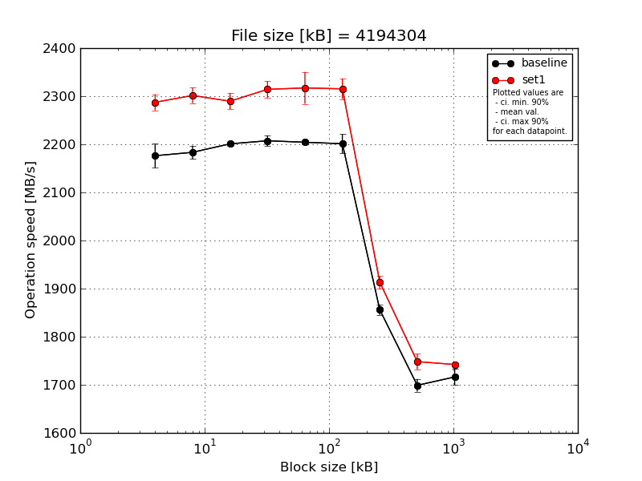
|
File size [kB] |
Block size [kB] |
| 64 |
128 |
256 |
512 |
1024 |
2048 |
4096 |
8192 |
16384 |
| baseline | 4194304 | 2207.19 | 2184.48 | 2200.52 | 2208.12 | 2212.57 | 2221.83 | 1849.14 | 1703.22 | 1709.64 |
| 4194304 | 2155.42 | 2170.15 | 2194.21 | 2225.35 | 2202.76 | 2192.02 | 1872.85 | 1692.68 | 1707.91 |
| 4194304 | 2198.71 | 2191.02 | 2201.09 | 2204.46 | 2201.75 | 2215.49 | 1851.25 | 1695.73 | 1721.92 |
| 4194304 | 2171.72 | 2202.71 | 2206.41 | 2192.58 | 2201.54 | 2207.23 | 1860.96 | 1719.86 | 1698.69 |
| 4194304 | 2148.3 | 2168.29 | 2202.56 | 2206.41 | 2202.77 | 2169.62 | 1845.4 | 1683.02 | 1743.63 |
| mean val. |
2176.27 |
2183.33 |
2200.96 |
2207.38 |
2204.28 |
2201.24 |
1855.92 |
1698.9 |
1716.36 |
| standard dev. |
25.97 |
14.45 |
4.42 |
11.75 |
4.67 |
20.9 |
11.07 |
13.78 |
17.34 |
| ci. min. 90% |
2151.51 |
2169.55 |
2196.75 |
2196.19 |
2199.82 |
2181.31 |
1845.37 |
1685.77 |
1699.82 |
| ci. max 90% |
2201.03 |
2197.11 |
2205.17 |
2218.58 |
2208.73 |
2221.17 |
1866.48 |
1712.04 |
1732.89 |
| geom. mean |
2176.15 |
2183.29 |
2200.95 |
2207.36 |
2204.27 |
2201.16 |
1855.89 |
1698.86 |
1716.29 |
| median |
2171.72 |
2184.48 |
2201.09 |
2206.41 |
2202.76 |
2207.23 |
1851.25 |
1695.73 |
1709.64 |
| first quartile |
2155.42 |
2170.15 |
2200.52 |
2204.46 |
2201.75 |
2192.02 |
1849.14 |
1692.68 |
1707.91 |
| third quartile |
2198.71 |
2191.02 |
2202.56 |
2208.12 |
2202.77 |
2215.49 |
1860.96 |
1703.22 |
1721.92 |
| minimum |
2148.3 |
2168.29 |
2194.21 |
2192.58 |
2201.54 |
2169.62 |
1845.4 |
1683.02 |
1698.69 |
| maximum |
2207.19 |
2202.71 |
2206.41 |
2225.35 |
2212.57 |
2221.83 |
1872.85 |
1719.86 |
1743.63 |
| set1 | 4194304 | 2264.47 | 2314.24 | 2267.3 | 2320.02 | 2338.85 | 2331.95 | 1914.01 | 1723.48 | 1744.69 |
| 4194304 | 2308.57 | 2283.25 | 2292.74 | 2325.38 | 2291.6 | 2295.8 | 1894.74 | 1738.36 | 1742.76 |
| 4194304 | 2292.02 | 2288.5 | 2298.88 | 2333.09 | 2296.05 | 2287.47 | 1915.31 | 1754.66 | 1747.12 |
| 4194304 | 2275.02 | 2298.68 | 2312.49 | 2286.92 | 2368.14 | 2324.82 | 1909.7 | 1760.68 | 1739.13 |
| 4194304 | 2296.66 | 2323.0 | 2276.59 | 2305.85 | 2291.56 | 2336.58 | 1932.03 | 1763.89 | 1737.2 |
| mean val. |
2287.35 |
2301.53 |
2289.6 |
2314.25 |
2317.24 |
2315.33 |
1913.16 |
1748.21 |
1742.18 |
| standard dev. |
17.57 |
16.84 |
17.93 |
18.23 |
34.72 |
22.22 |
13.35 |
16.97 |
4.03 |
| ci. min. 90% |
2270.6 |
2285.47 |
2272.5 |
2296.87 |
2284.13 |
2294.14 |
1900.43 |
1732.03 |
1738.33 |
| ci. max 90% |
2304.1 |
2317.59 |
2306.69 |
2331.63 |
2350.34 |
2336.51 |
1925.88 |
1764.39 |
1746.03 |
| geom. mean |
2287.29 |
2301.48 |
2289.54 |
2314.19 |
2317.03 |
2315.24 |
1913.12 |
1748.15 |
1742.18 |
| median |
2292.02 |
2298.68 |
2292.74 |
2320.02 |
2296.05 |
2324.82 |
1914.01 |
1754.66 |
1742.76 |
| first quartile |
2275.02 |
2288.5 |
2276.59 |
2305.85 |
2291.6 |
2295.8 |
1909.7 |
1738.36 |
1739.13 |
| third quartile |
2296.66 |
2314.24 |
2298.88 |
2325.38 |
2338.85 |
2331.95 |
1915.31 |
1760.68 |
1744.69 |
| minimum |
2264.47 |
2283.25 |
2267.3 |
2286.92 |
2291.56 |
2287.47 |
1894.74 |
1723.48 |
1737.2 |
| maximum |
2308.57 |
2323.0 |
2312.49 |
2333.09 |
2368.14 |
2336.58 |
1932.03 |
1763.89 |
1747.12 |
| baseline set1 difference |
5.1 % |
5.41 % |
4.03 % |
4.84 % |
5.12 % |
5.18 % |
3.08 % |
2.9 % |
1.5 % |
| ttest p-value |
0.0 |
0.0 |
0.0 |
0.0 |
0.0001 |
0.0 |
0.0001 |
0.001 |
0.0118 |
| ttest equality |
DIFF |
DIFF |
DIFF |
DIFF |
DIFF |
DIFF |
DIFF |
DIFF |
DIFF |